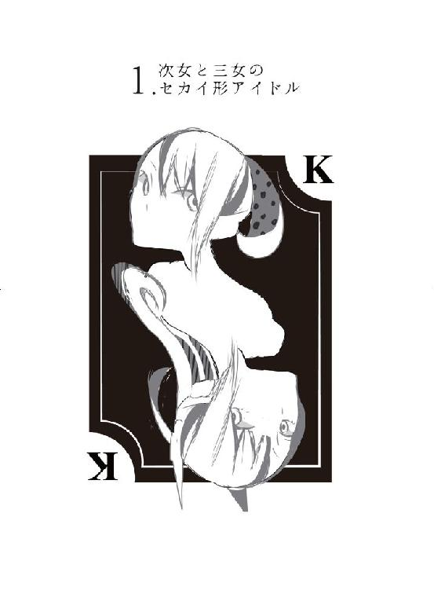
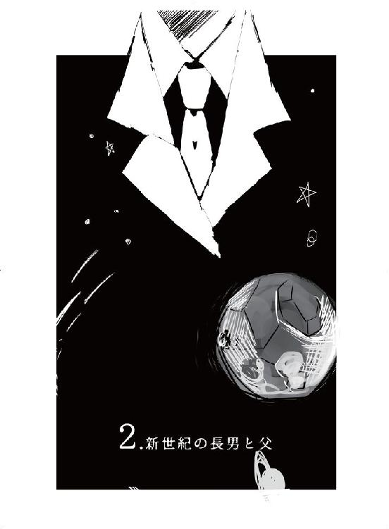
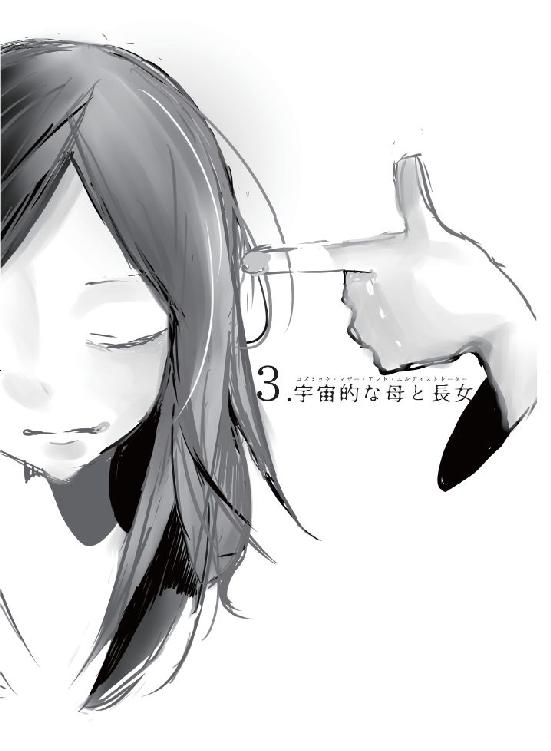
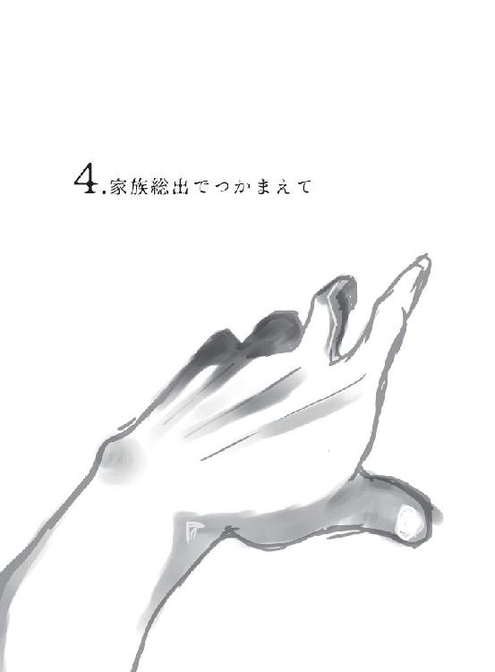
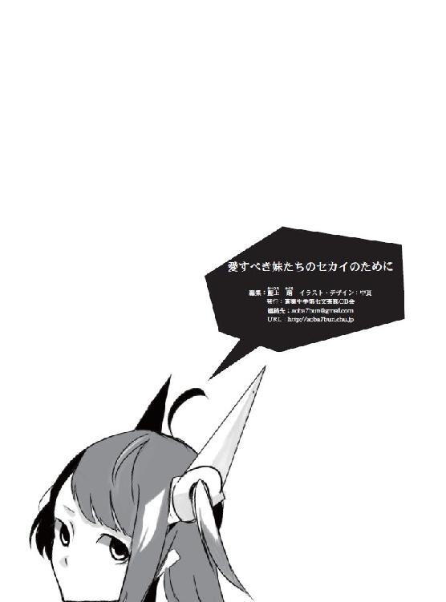

| 愛すべき妹たちのセカイのために | |
| Unknown | |
| aobachugakudainanabungeibuo-bi-kai (2015) | |
藍上 踊
「兄ちゃ、遅い」
「まだ兄さんも起きてきてないじゃないか」
「薫兄は昨日も帰ってくるのが遅かったからしょうがないの」
「僕も昨日は寝るのが遅かったんだ」
「はい、ご飯よ」
「お母さんも言ってよ。兄ちゃ、すぐ寝坊して講義サボろうとするんだから」
「航の今の格好からわかることを集約すると、航は昨日の夜......うーん、これは言えないわ」
「兄ちゃの変態！」
「誤解を招く言い方はやめてくれよ母さん。というか今の格好って毎日同じパジャマから何がわかるんだ」
「服の乱れ、表情、髪の毛一本一本から多くのことを読み取り、推理するのが名探偵っていうものよ」
「叙述トリックが主流の時代にそういう身体情報はそもそもあまり書かれもしな――」
「航――毎朝四時に起きて、一日一冊ポーから順に読みましょうね。ポー、ドイル、クリスティ、ヴァン・ダイン......」
「そうだよ、兄ちゃ。四時起きなら遅刻しないよ」
「ノルマをこなすために講義中に読書する羽目になりそうだけど？」
「航は講義の間いつも寝ているから関係ないよ」
「やっぱり」
「いや姉さんは何で知ってるの」
「何でもは知らないよ。知ってるのは家族のことだけ」
「それ......僕のことは何でも知ってるってこと？」
「航の秘密――腰に三つ並んだほくろがあるよ」
「兄ちゃの変態！」
「それは姉さんなんだから知っててもおかしくないでしょっていうか、黒葉さんが何を想像しているのか僕には分かりかねるんだけど」
「大丈夫、悪いことじゃないんだよ」
「お姉様、そんなのフォローしなくていいってわたしは思う」
「姉さんが言ってるのはそういうことでなく......」
「えっどういう意味？ カニバリズム趣味があるとかそういうこと？」
「うう。母さんのせいなんだから収拾つけてよ......」
「ごめんね航、知ってしまった真実は黙っておけなくて」
「うっ、これだから探偵っていう人種は......」
「おはよう」
「おはよう、薫兄。まだ寝てなくて大丈夫？」
「大丈夫、いつもより寝てるぐらいさ」
「もっと寝なくちゃ駄目だよ、身体壊しちゃう」
「ああ気をつけるよ。ありがとうな、黒葉」
「なんだか兄さんと僕とで扱いが違わなくないか？」
「薫兄はばりばり働いてるんだよ？ 片や、兄ちゃは寝てるだけ」
「いやそんなことは」
「あってるよ？」
「姉さん！」
「おまけに今は黒葉の方がお金を稼いでいるわけだからな」
「そうねえ」
「母さんまで......」
「ああごめんね、航。知ってしまった真実は黙っておけなくて」
「真実じゃない！」
「......黒葉、時間は大丈夫か」
「あっ。遅刻する！ お父さんありがと――もう、兄ちゃのせいだからね！」
「朝から家族一同に散々馬鹿にされたせいだが」
「それは兄ちゃが悪いから」
「そうですか」
「ほら、早く早く」
「おい、食べてる最中だぞ、引っ張るな、ああっ、僕の卵がまだ」
「大丈夫、さっき食べておいたから心配しないでいいよ」
「姉さん、先読みしたからって僕の皿の上にある卵は食べないで。せめて僕が出て行くまでは待って」
「それじゃいってきまーす！」
「気をつけていってらっしゃいね」
「いってきま――痛い！ おい、落ち着けって！」
「落ち着いてなんかいられないよ。だって今日は、新しいセカイの始まりの日なんだよ？」
「格好良いこと言ってるけど、単なる始業式のことだよな」
「そっちの方が盛り上がるでしょ？ こういうのは自分で盛り上げていくものだよ。黙ってたらどんどんつまらなくなってっちゃうんだから」
「それはそうかもな」
「姉様が言ってた。『新しいセカイは、唐突に、無数に、降り注いでくる。それをドカ―――ン！って派手に爆発させるのが大事なんだよ』って」
「爆発しちゃ駄目だろ」
「そうかな？ わたしはわかるなあ」
「うーん？」
「いいんじゃないかなあ、爆発して。馬鹿馬鹿しいなんて思えるくらいが丁度良い気がするんだ。自分が生きているセカイの話じゃない。そう思えるくらい冗談みたいな方が、その――届くっていう気がしない？」
「届く？ 届くって、どこに？」
「さあ――新しいセカイに、かな」

僕こと手鏡航のように、たいへんに一般的で平均的で平凡極まりなくおまけに純粋無垢で心清らかな男子大学生の一人としては、このような状況にはまったく無縁でありどう対処すればよいのかなどわかるはずもない。
いや、お恥ずかしいことながら、少しばかりクール＝ジャパン的な文化に詳しくなくもない現代日本人においては無縁というほどでもないのだが、非現実的なセカイの話を現実に運んで物事に対処できる人間というのは滅多におらず、今起きている現象に対処できるのならそれはそれで逆に空想と現実の区別を付けて欲しいと僕は思う。
――空から降ってくる女の子を見つけた人間が、一体何を対応すれば良い？
あなたは......ビルから投身自殺を図った女性を救うことができるのか。
人間の体重が自然落下すればあっという間に地面に衝突するし、高さにもよるが車もペシャンコにするような激しい重力が伴う。受け止めようなどと考えられるはずもない。むしろ受け止めたら、それは主婦がマンションのベランダから落としてしまった植木鉢に当って死ぬような話になる。
しかしながら。
その女の子は、僕が少し走れば間に合うくらいの絶妙なスピードで、徐々に落下しているのだった。
彼女の周りだけ時間の経過がおかしくなっているのか。よく見れば彼女の周囲だけ奥が揺らいで見える。
それは、天使だか女神だかの降臨の様子に似ていた。天に現れた天使様がゆっくりと地上に降りてきて、主人公に祝福を告げるような、そんなシーン。
僕は、この運命らしきものをどう捉えるべきか悩んだ。
この状況は、僕が彼女を救う運命である、と示しているように思われる（見た目通りの加速度と見た目通りの体重であるとすれば、彼女が地面に到達したとして、さしたる衝撃があるようには見えないが）。
しかし――運命かのように思われるということは、つまり、運命ではないと考えるべきなのではないのか。運命などはなく――そこには例のアレがあるだけなのだ。例のアレはきっと僕の生活をメタメタのグシャグシャにしてしまう。僕は、僕のためにも、家族のためにも、絶対に例のアレに近づくべきではない。
それでも、僕は駆け出していた。
彼女の落下点に余裕を持って到着し、念のためしっかりと腰を据えた万全の体勢をとり、そして彼女を受け止め――痛ッ、何するんだ、お、おい、ちょっと、ああっ......。
「――ねえ、キミ、大丈夫？」
いわゆるお姫様だっこで、空から降ってきた彼女を支えた。受け止めるときに持ち上げようと力を入れたためか、顔の距離はもう少しで鼻が触れそうなほど近い。
空から墜落した彼女は、思った以上に幼く、おそらく高校生になるからならないかくらいの年齢と思われた。落下しながらふわふわと舞っていた長い綺麗な黒髪が強く印象に残る。
彼女はゆっくりとまぶたを開いた。
そしていま見つめ合っている顔に驚いたように目を大きく開いたまま、しばらくまばたきもせず静止してしまった。
彼女の中でたくさんのハテナマークが並んでいることは表情からよく伝わったが、何だかまるで生まれたての鳥が親の顔を覚えるようだ――と僕はおかしなことを考えていた。
やがて彼女にもようやく理解が降ってきたのか――恥ずかしそうに頬を紅く染めて目をそらし、言葉少なに返事をした。
「はい......大丈夫、です」
その返事に彼女を支えるポニーテールの女性が微笑んだ瞬間、春風が桜の花びらをなびかせ、優しい陽射しがきらきらと輝かせた。
空から落ちてきた謎の彼女との微笑ましいファースト・インプレッションをしているのは、そのすぐ横で地面に倒されている僕の――その美しい妹君に他ならなかった。
＊
「私たちの敬愛すべき、崇拝すべき手鏡家のお姉様がおっしゃることには、『空から降ってきた女の子を見るというのは、理不尽で傲慢で超越的な空想の象徴であって、世界とセカイの境界に立っていることを暗示している。それを見つけてしまったとき、落下し続ける彼女を救う役割は何が何でも奪い取らなきゃならないよ』――って」
「知ってるよ。で、それを聞いた兄さんが『もっと高いところから墜落しても平気な身体にしてあげなくっちゃあね』って言ったんだろ」
「その前にお姉様は『そうじゃないと、セカイから戻って来られなくなるんだ』って言ってたよ」
「そうだったかな......。ともかくそれで君は僕を突き倒してでも落下する彼女をキャッチしようとしたってわけ――嗚呼、なんて兄思いの妹なんだろう！」
「大丈夫。兄ちゃは私が守るから」
「うーん、その台詞は君の役割じゃないはずなのだけれど......」
いや、実際には空から降ってきた彼女の役目でもないが。
その彼女に目を向けると、黒葉の部屋のベッドに座っている。
落ち着いて見ると、黒葉とほぼ同じくらいの身長だし、印象的なぱっちりとした大きな目がとても似ている。上空の彼女を下から見てもほとんど何もわからなかったはずだが、もしかしたら彼女にどこか妹の雰囲気を感じて、救わなくちゃならないと思ったのかもしれない、と思う。まあ僕には救えなかったんだけど。
彼女は黒葉の部屋を物珍しそうに眺めている。そんな色々知っているというわけではないが、女子高生の部屋としてそんなに特殊なものが置いているとは思えない。もしかしたら特殊な生活環境だったのかもしれない、と色々察してしまう。何せ、空から降ってこないとならないような人生なのだ。そんな特殊な人生など当然僕には経験がなく、僕に察せられることなど本当は何もない。
つまり、彼女に聞かなければ何もわからないってことだ。
「ええと......」
僕が困ったように彼女に目を向けると、謎の女の子は話し始めた。
「私の名前はカァラ、と言います」
「カァラ」
はっきり聞こえたのに、黒葉は何故か名前を反芻した。
「はい、そうです」
カァラはこれから本題に入るというように、身体を僕の方へ向けじっくり間をあけた。そして真剣な表情で話し始める。
「私は、貴方と世界を救いに」『それより私とアイドルしませんか？』
黒葉はカァラの両手を強く握って言う。
我らが手鏡家の妹には突然空気をクラッシュする能力を持っていた。空気が読めないとかではなくいち早く空気を察した上で壊す気しかない。一緒に忘れ物を探していたら僕と踊りませんか、と突然勧誘するくらい急な言葉だったのだが、そのタイミングは何とも絶妙だった。
「あ、すごく良いと思うよそれ。うん、似合ってると思うな、アイドル」
彼女にとって困ったことに僕もその方向性の方が助かりそうだった。アイドルなんてよく知らないけど。たしかにプリチケ交換でもしてそうな名前だし。
うっすら聞こえた言葉はなかったことにしましょう。まったくおそろしいね。これだから僕は集団行動ってやつが嫌いなんだ。
「でしょう～、でしょう～」
全力で困っておろおろするカァラを無視して、黒葉が正直ちょっと気持ち悪い動きで喜びを表している。動くたびにご自慢のポニーテールがぴょこんと跳ねて可愛らしい。念のため言うと、ポニーテールがね。
「あの......」
「心配しなくても、実はツテがあるんだ。お姉様が『いざというときのために』って」
そう言いながら、ガサゴソと机の奥から名刺を取り出す。名刺にはプロデューサーという肩書とともに名前が書かれており、事務所の名前は〝ギフテッド〟となっている。
「姉さんにどうしてそんなツテが」
「よくわからないけど、お姉様のことだからきっと大丈夫」
「まあそれはそうだけど」
「あの！ 聞いて下さい！」
あーあ、怒らせちゃったよ。
「えっ、なになに？」
黒葉の白々しいとぼけ方にカァラは一瞬気圧される。妹が普段、人とどんな交流をしてるんだか兄は恐ろしくてならないね。妹の交友関係は大丈夫なのかしらん。
「わ、私には使命があるんです！」黒葉のベッドに座っていたため、振り上げた腕の叩く場所はそのベッドしかなく、ボスン、と可愛らしい音がした。「そのために私は生まれて、そのために私はすべてを捧げてきたんです！」
「え～、いいじゃん。そんなの辞めちゃおうよ。そんなの捨てちゃおうよ。使命だなんて思って生きるの、絶対つらいでしょ？」泣きそうになりながら言うカァラの割と重い言葉も、我が妹様には糠に釘だった。「もっと自分が楽しいと思うことしようよ。楽しく壊しあって、好きに奪いあって、自由に殺しあおうよ」
それはそれで過剰だと常識的人間であるところの僕は思うけれど......まあ一理ある。僕も使命なんてまっぴら御免だもの（まだ何も聞いていないという体だが）。
「まあ出逢ったばかりの僕にカァラさんの事情は何一つわからないけれど、ただの一人の人間として――もしそれが本当に辛いことなら辞めてもいいと思うんだ。その代わりがアイドルかどうかは別としてもさ」
最後の一言に「そこが一番大切なのに！」と黒葉がわめいているが、ひとまず無視。
「ちょっと一晩考え直すと気が変わるかもしれないからさ。一度おうちにお帰り頂いて、ご両親とか信用できる人に相談してみるといいじゃないかな......？」
優しい言葉をかけてみたつもりだったが、火を噴くようにカァラが叫んだ。
「貴方は知らないんです、何もかも！」力強く叫んだかと思うと一転、暗い表情でカァラは続ける。「この世界には、私は家も、親も、何もない......。ただ、あるのは――」
「あるのは？」
あっ、反射的に禁句を言ってしまった。質問行為。
即座に黒葉に肘で小突かれ、地味に痛い。
「貴方との運命だけ......」
カァラは、僕を愛おしそうな目で見た。同時に、どこか哀しそうでもあると僕は感じた。
「私と貴方は――結ばれる運命なんです」
うーん......運命ですって。
まあ、カァラが空から降ってきた時点で感じてはいたのだけれど。運命、ねえ。
ついさっきは使命、と言っていたけれど。それは別の事象なのかな。関連があるのかな。どうなんだろう。
僕がそんなぼやっとした感じのことを考えていた一方――我が妹様は怒り狂っておいでであった。
「運命だなんて。そんなの、くっだらない！」
黒葉は危険な目をしていた。奪い取るつもりだ。楽しく、好きに、自由に、奪い取るつもりだ。
運命といった言葉は、姉さんを特に崇拝する黒葉にはタブーである。
姉さんが自分で自分の頭を撃ち抜いたのも決して運命などではないと、黒葉は信じなくてはならない――。
でも何故だか黒葉はちらちらと僕を見るし、それだけなのかという雰囲気もするが......。
あれ、そもそもどうして大学から帰る僕のすぐ後ろに黒葉が居たんだったっけ――。
「そんな運命、認めない。私、絶対、カァラをアイドルにする！」
そう言って、妹はカァラをスタンガンで強制的に眠らせた。
......妹の交友関係については、もうあまり考えたくない。
＊
こうして、黒葉によるカァラのアイドル道（という名の軟禁生活）が始まった。
大学生たる僕は一人暮らしをしているため詳しいことは知らないが、黒葉の部屋で生活をしているらしい。父さんと母さんにどう説明したのか知らないが、そもそもほとんど家にいない両親だから問題はない――いや、もちろん問題だらけなんだけど。
さて、カァラのアイドルカツドウについてなのだが。
黒葉が有能なのか姉さんのコネが異常なのか――まず、カァラは目が覚めたらデビューイベントに参加していた。
まったく理解ができないと思うが、僕にも理解できない。普通に考えてうまくいくわけがない。
アイドルオタクでもない僕が感じる限りでは、まったく悪趣味なイベントだと思う。電波少年という番組が昔あったが、あんな感じだろう（僕は見ていて気分が悪くなった方である）。しかし、あれは売れない芸人故にいくら無茶でも仕事の依頼を断れない、というような前提があったが、カァラの場合、アイドルになる気はさらさらなかったのだから頭がおかしい。望まずその瞬間アイドルになった（らしき）人物がまともなリアクションなどできるわけはない。
何はともあれ、参加者は、少女が目を覚ましたらアイドルになっていた――という瞬間を目撃することとなった。
しかし――それ故にというべきか――いままさにアイドルにされる瞬間を眺めるイベントというのは、それなりに人気を博し、批判を生み、色々な意味で界隈の話題になったらしい。
黒葉は、そのデビューイベントにおいて直にカァラを説得したという。
伝聞なのは、黒葉から一切のカァラとの交流を断たれているためそのイベントにも参加できなかったためである。カァラの、僕と『結ばれる運命』――という言葉があったからこそのルールかとは思うが、何だか過剰ではないだろうか......。
しかし、録画した映像はのちに見ることができた（youtubeの違法動画で）。
映像の中で、カァラは気狂いのように何度も「世界が壊れてしまう！」と叫んでいた。
インターネットを見ると、世間的には不思議ちゃんであるとか、何かの寸劇だとか捉えられているらしい。人が本当にブチ切れて泣いて暴れているにも関わらず、世間は寛容だ。
「世界が......。私の世界が......」カァラは頭を抱えて、いまにも泣きそうになっている。「こんなことをしている内にもみんな......、みんな......」
「世界？ カァラの世界なんて、知ったこっちゃないよ、私としては」黒葉は、きっぱりと言った。どう考えても言い過ぎだった。「それはきっと、何か手に入れたいものがあるだけじゃないの。その何かを、手に入れられない大きなものに置き換えているだけだよ」
「そういう、ことじゃない......！ 人が突然消えていってしまったんです......。そんなの、人間にはできない。何かとてつもない大きな力によって、私の世界の人類は滅亡させられそうになっている。それは本当......本当のことなんです......」
「まあ、それは、そうだとして」何もわかってないだろうのに、わかったようなことを言う黒葉。「でもね――ここは新しい世界だから」
「......新しい、世界？」
「そう、これまでとはまったく異なる世界が広がっているわけ。知らない人がたくさんいて、別の法則性が成り立っていて、楽しいこともあれば辛いこともある。そんな、普通の新しい世界」
「そんな......」
「うん、理不尽だよ、それは。運命みたいに見えるときもある。フザけんなって思うけど」そこで黒葉は珍しくトーンを下げた。「でも、そういうのって結構どうしようもない――自分で変えられることって、本当に些細なことしかない。大枠はその理不尽さに逆らえず生きていくしかない」
カァラは、静かに黒葉の言葉を聞いていた。
「――だから、そのおかしな世界の中で、新しい世界を作ろうとするしかないかなって思っているよ。楽しく壊しあって、好きに奪いあって、自由に殺しあって――自分なりの新しい世界を作るしかないかなって」
最後まで聞いてから、カァラは一言呟いた。
「それなら......私はあなたという理不尽さと戦えば良いということですか」
「私はカァラの言っている運命なるものを殺す。カァラはカァラを縛る何かと戦えばいい。それは私なのかもしれない――まあ私は、それは私じゃないだろうって思うけど」
そのときカァラが何を思ったのか――ついでにそれを見ていたアイドルオタクたちがどう思ったのかは、さて、僕のあずかり知るところではない。
そんな会話のお陰なのか、それとも単にアイドルにハマったのか、僕にははわからないが――それ以降、黒葉とカァラの二人は定期的にイベントを開いてそれなりの人を集めているらしい。
黒葉が姉でカァラが妹、という双子の姉妹という設定とのこと。たしかに雰囲気はとても似ているから、格好も合わせてしまえば双子と言われてもまったくわからない。
例の姉さんのコネの先は、どうも業界の超有名事務所だったらしい。......姉さんは社長の重大な秘密でも握っていたのだろうか。
黒葉によると、そのおかげで強いバックボーンを持ちながらいろいろ好き勝手なイベントをやらせてもらっているとのこと。
黒葉のことだ、危ないことを自分からやってしまっているに違いない。
......僕はとてもとてもとてもとてもとても不安だ。不安な要素しかない。
それから三ヶ月も経過した頃、カァラと二人きりになる機会があった。
といっても黒葉が友人たちと旅行に出かけたからで、これは黒葉がカァラにロスタイムを与えたような形になるだろう。それは一人暮らしの部屋に引きこもる僕の家にカァラがやってきたことからもわかる。カァラに僕の家の住所を伝えた記憶はない。
「その......ええと......そろそろ慣れた？」
会うどころか会話も三ヶ月振りなのだ。おまけに最後に話したのが例の運命のことなので余計に気まずい。
「この世界に、ということですか。それはようやく慣れてきました」
「......えっと、それは良かった」
今度は我が家のベッドに座るカァラに適当な相槌をうったりするが、とりたてて話すことが思いつかない。どうしたものか。
「妹がご迷惑をおかけしております」
とりあえず心からの謝罪を試みてみた。妹のやったことなのだから、僕にも責任があるような気がする。
「姉さまと私。性格は色々と異なりますが、どこか根本的なところで同じなんだろうと思います」
姉さま、というのは黒葉のことであろう。双子の姉妹という設定のアイドルだから、黒葉が強制（矯正？）させているに違いない。自分をさま付けで呼ばせるとはマニアックな妹だなあ。
まあ、たしかに黒葉とカァラはどこか似ているような気がしている。どこか漂う妹オーラというか......。
「私は、もう一つの世界を救うためにやってきた、もう一つの世界のあなたの妹なんです、兄さま」
......いまのは冗談のつもりだったのだけれど。
そしてカァラは、ようやく出逢った日に言おうとしていたであろうことを話し始めた。
カァラが住む異世界が、少女が突然消失するという現象により滅亡しかけていること。
それを防ぐため、世界調整委員会なる謎組織に所属する父が娘であるカァラを送り出したこと。
あちらの世界の父から、こちらの世界の父と兄を頼るよう言われたこと。
あちらの世界の父の話では、既に連絡を取ってあると聞いていたこと。
こちらの世界の兄の元へ到着するよう設定し、世界を移動してきたということ。
「その結果、こちらの世界の自分に捕まったと」
確かにイベントの様子を見て息ぴったしだと思っていたが、異世界の同一人物だから当然だということか？
「のちほど、こちらの世界の父さまにも相談しましたが......父さまも何も知りませんでした」
自虐気味な笑いをしてから、カァラは言う。
「けれど、こちらの世界の家族は、私にとても優しくしてくれました......。特に姉さまには何から何までして頂き、感謝し尽くしてもしきれません」さすが我が妹よ。「姉さまから聞いているかと思いますが、いま家では私を家族として扱ってくださっています。父さまが戸籍を用意してくださったので、学校にも通うことができています」
......まったく聞いていないし、僕の方が家族からハブられているのではないのか。
ていうかしれっと戸籍を用意する父さんは一体何者なんだ？
「これは――夢のような生活です。いまにも滅び行く世界と比べれば、天国そのものです。あちらの世界では、私に頼れる人は兄さましかいませんでした。こちらの世界には、認められる場があって、友達がいて、家族がいる。けれど――」
カァラは目を伏せた。
「やはり私は、あちらの世界のことがどうしても忘れられないんです――。使命とかじゃなくて。世界を救いたいとかじゃなくて。やっぱり私が生まれ、生きてきた世界はあっちだから――」
そりゃあそうだろう、と思う。
そんな簡単に、過去とか、血縁とか、好きなこととか嫌いなこととか、何もなかったコトにして生きるなんてできるはずがない。
「でももう――もう、諦めます。世界を救うことなど、できやしません。一人だけが当たる奇跡の宝くじに当たったようなもの、とでも言いましょうか。いくら皆に優しくして頂いても、皆さんと楽しく生活することであちらの世界を救う方法を見つけることなんて、できるわけがありません」
また自虐的な笑い。そういえば黒葉もネガティブな時によくやるなあ。
「考えてみれば、本当は最初から世界が救えるなんて信じていなかったのに、あちらの世界の現実が耐え切れなくて逃げてきただけです。現実を苦にしてあり得ない空想を胸に抱きながら自殺したら、別の世界に転生した――そういうことに過ぎなかったんです」
伏せていた目を、何かに怒るように、僕に向けた。
「理不尽です。でもどうしようもない。私は新しい世界を生きるしかない」
......まあ。
まあ、そうだろう。
そう思って生きていくことができるなら、それでいいのだろう。
でも、一つだけ、黒葉の言葉を曲解しているのが気になる。気になってしまう。
「うーん、一つ確認させて欲しいんだけれど」
「はい」
「黒葉の言っていたこととは、一つ、決定的に違うんじゃないのかな」
僕は、早口になっていて、声を荒らげていて、何だか怒っているみたいだった。いや、怒っていないんだけどさ。本当に。
「黒葉は『諦めろ』なんて言っていないと思うんだけれど。何でリセットしようとしているんだ？ ささっと終わらせてしまって気楽な気分を味わおうとしているところ残念だけれど、全ッ然終わらないよ。君がここまでやってきたことをすぱっと突然やめることなんてできない。君は使命とやらにずっと縛られ続ける。一年経てば今年も何も行動しなかったと気分が悪くなるし、十年後には後悔の渦に巻き込まれて、何で何も行動しなかったんだろうと思い始めてますます何も行動できなくなる。時々、疲れて寝る前にでも元の世界のことを思い出しては暗澹とした気分になり、自分だけ幸せでいいのだろうかなんて悩み、眠れないまま朝を迎えたりする。もう、辞めたくても辞められない。降りたくても降りられない。いいじゃないか。やり続けろよ。世界を救い続けろよ。これについては都合の良いことに、救えなくても誰も文句は言えないんだし。本当に――世界を救いたかったんだろ。他人がしてなくても、君だけは――カァラはすればいい」
日頃、妹相手ぐらいとしかまともに会話しない人間がたまにこういうことをすると一発で声が枯れそうになるのでそれを隠そうと必死になっていた。しかし、笑われたりせず沈黙のまましばらく時間が経過したためとても安心した。
「それは――兄さまと」カァラは何かを言いかけ、口をつぐんだ。「いえ、何でもありません」
しばらく沈黙が部屋を包む。
それほど沈黙に苦を感じない方の人間なのに全く耐えられない気持ちになるが、まあ僕に言えることは別段何もない。
「その......。兄さまと私の、運命......のお話ですけれど」そういえばそういう謎もあった。「あちらの世界で、私と兄さまは......結ばれているんです」
ええと......結ばれている、とはどういうことを指すんですかね。どこまでを指すんですかね。兄さまは気になるよ。
「血は繋がっていないということ？」
「いえ、繋がっているのですが......。人口が急激に低下したために色々なことが緩くなったのもありますし、そもそも最近では無法状態でしたし......」
「......そ、そう」
そう言って、カァラは僕の両手をとり、身を寄せてくる。
僕は成り行き的にじりじりと後退するものの、自然にベッドに足が衝突。そのままベッドに押し倒される形になった。
僕の顔の上にすぐカァラの顔があり、僕の視界には、いまにも泣きそうに顔を歪めるカァラが映る。
「僕は、違――」
「言わなくてもわかっています――そういうことは、言わないでください。言わない方が、格好良いんですよ」
カァラの目には、おそらく僕には見えない世界のことが映っていた。
その目に涙を浮かべながら、僕ではない僕に微笑む。
「そういうことを――あなたは知らないんです。知らないん、ですよ」
そう言ったあと、カァラは僕の胸に倒れこんでひとしきり泣いていた。
僕は経験上、こういうときに何か喋るとよくないと知っていた（すぐべらべら文句や説教などをしてしまう）ので、ひたすら黙って頭を撫でてやることに専念する。
彼女は僕の妹なのだから、何ら悪いことはしていない――と、僕は誰かに言い訳をした。
＊
二人の妹の誕生日会ということで、珍しく実家に帰った。
なお誕生日会と言っても、すき焼きを食べる会のことである。
一応言っておくと、妹の誕生日以外は手鏡家で特に誕生日会は開かれていない。自分の誕生日を主催する黒葉の感覚にはなかなかシビれるものがあるが、しかしこうでもしないと家族が集まらないのだということにもちろん黒葉は自覚的だった。家族を支えるものは姉さんが死んだときから決定的に失われていて、取り戻すことはできない。
しかし、今回は参加者にカァラが増えている。
さすがに新しい家族が増えて初めての誕生日会だからと、いつもは遅れてくる両親も早く帰ってきていた。例年通り、兄さんだけは不参加だったけれど。
誕生日会なのに黒葉が自分で用意していたすき焼きも、今回は二人で作ったらしい。見てはいないが、それはとても微笑ましい光景だったろう。
父さんは無口だし、母さんはちょっぴり天然な感じなので、黒葉がぺらぺらと話を進めていく様子は普段とそれほど変わらない。けれど、カァラが家族の一員となって初めての家族団欒であり、話すべきことも話したいこともいくらでもある――うちの家族のこと、家の中のルール、昔の思い出......などなど。
僕は、黒葉がカァラの前で姉ぶるのを微笑ましく見ながら、カァラが家族として自然に会話しているのを見て心から安堵していた。
カァラのお陰で、家族にも新しいルールが与えられた。
それは、停滞した何かを進める力を持っている、かもしれない。
食事が終わって適当に見繕ったペアの髪飾りをプレゼントしたところ、そのまま二人で洗面台の大きな鏡まで付けに行ってしまった。居間にまで妹たちの騒ぐ声が聞こえている。
その間に、父さんにカァラのことを訊いてみた。
「あちらの世界はもうどうにもならないらしい」
おそらくカァラに聞こえないように、声を抑えて言う父さん。
......えっ。父さんは何を言っているの。
「こちらの世界でも協力して調査を進めているが、少女の自然消滅現象は未だ根源的な原因がわからない。このままの増加傾向を維持すると、あちらの世界はあと1年で少女がいなくなる計算になる」
どうやら、こちらの父さんも〝世界調整委員会〟なる謎組織に所属してしまっているらしい。
時々そういえば父さんの仕事は何だろうと思うことは確かにあったが、別に大した仕事じゃないだろうと真剣に考えていなかった。まさかそんな怪しげな職業だったとは。
業務内容は多世界間でのバランスをとる、とのこと。具体的な仕事はまったくわからないが、コントローラでゲームでもしているんじゃないのかしら。
「ある日、あちらの世界の私が『娘を頼む』とだけ言って突然連絡がつかなくなった。しばらくすると、家に黒葉に似た女の子がいて、『私は別の世界から来た』と言う。間違いなく、彼の娘だろうと考えた。そして同時に、彼女は私の娘でもある」
「それで、カァラを家族として迎え入れた」
「そうだ」
「追い返そうとは思わなかったの。それこそ多世界間のバランス的に大問題な気がするけど」
「追い返せない。私たちの世界には追い返す技術力がない」
「あちらの世界の人に聞けばいいんじゃないの」
「それはバランスが崩れてしまう」
うーん、まあ起こってしまったことは仕方がないけれど、自分からバランスを崩したくはないということね。
「きっといまこちらの世界にカァラがいることで、まさにバランスが崩れていると思うのだけれど」
「その通りだ。私たちのセカイに重大な影響を及ぼす危険がある。特にカァラと黒葉への影響が大きいと考えられる。そして、私たち家族を含めた二人の関係者も」
「それは――まずいだろ」
どういう経緯にせよ、どういう血縁にせよ、どういう責任にせよ――二人は僕の妹だ。
僕がどうしたいのかは、語るまでもない。
「だからお前は――巨大ロボットに乗るんだ」
............は、はあ。
驚かせるのは面倒だからやめて欲しい。
すごく疲れるんだよ、本当のこと。

世の中ってやつは理不尽だ。
ましてや物理法則が守られないとあっては目も当てられない。
「まあそういうこというなよ。せっかく常人にはできない経験をしているんだからさ」
「常人でいいんだ、僕は」
「たとえそうだったとしても、この瞬間からお前はもう常人じゃなくなるってことだよ」
いくら空から女の子が落ちてきても救えない常人だったはずの僕が。
常に他人事風の物言いを心がけ、傍観者の姿勢を崩さない精神で生きている常人だったはずの僕が。
たったいま――巨大ロボットに乗っているなど信じられるわけがない。
「いやだいやだいやだ......、早く帰って妹たちとワイワイしたい......」
「にげちゃだめだにげちゃだめだにげちゃだめだ」
「それは僕の台詞なんだ！」
気持ち的には逆なのだけれど、役割的には。
こういうのって普通、パイロットが女の子なら男性の人格、男の子なら女性の人格がついてくるものじゃないんだろうか。恋愛のイメージとか、子宮のイメージとか。
いや別に女の子じゃないとどうしても嫌だってわけじゃないんだけれど......。
ともかくどう逃げるか真剣に考えたいのだが、〝ロボットの精神〟なるものはぺらぺらとずっと話しかけてくる。搭乗時からずっと司令部からの音声通信も聞こえてきてはいるのだが、こいつの喋りで基本的に聞こえない。
「それは、正確な表現じゃあないな」
あれ、このＡＩ、いま心の声を......。
「こいつ――バディには搭乗者とロボットが一心同体となるシステムが組み込まれているからね。このシステムによって、搭乗者は自由気ままにロボットを動かすことができるんだ。ありがちだけど素晴らしいだろう。アニメで見てから、ずっとやってみたかったんだよ」アニメってすごいな――いや、すごいのは日本の技術力か。「それで元々の話だが、そもそも俺の声は脳に直接語りかける仕組みだから、さっき司令部の通信が聞こえないと考えていたのはやや正確ではない。ただし、脳の〝聞こえる〟と感じるフローを利用して俺の声を伝達しているから、やはり脳が両方同時に〝聞く〟のは難しいんだが」
何故かＡＩが自慢気に話している。
「俺が開発したんだからそりゃあ自慢だってするさ」
「開発者だからって別にそうとは限らないと思うけど......」
このＡＩ、やけに馴れ馴れしい。冗談の設定値でも変えられないものだろうか。
「そんなの許すわけないだろ。このマシンには僕のエゴが詰まっているんだ。このマシンは、僕そのものにしか制御することはできない」
「そういう風に作ったんだろ、そのエゴとやらで」
「その通り」
あっさり認めるＡＩ。
「まあ大丈夫さ。司令部の言葉は俺が聞いて適当に返事をしている」
「それはそれで不安なんだ。重要なことは連絡してくれよ。いきなりこのロボットが爆発して死ぬなんてまっぴら御免なんだ」
話をしている間にも、周囲はギシギシ金属らしきものがこすれる音が聞こえてくるし、通信越しに焦った声やら怒声やらアラート音やらが聞こえてきて、何かが刻一刻と進んではいるらしい。
「なんていうか......巨大ロボットなのにもっとすんなり宇宙に飛ぶことはできないのか。掛け声を上げたら大気圏突破、みたいな」
「巨大ロボットって言っても、バディはリアル系だからな」
そう言われてしまうと黙るしかない。僕もスーパー系は攻撃がすぐ避けられるのであまり好きではないのだ。
突然、カウントダウンが始まった。
「おい、重要なことは連絡してくれと言っただろ」
「搭乗者に影響はないよう設計しているから問題ない」
「こういうカウントダウンっていうのは、人間の気持ちの問題がメインなんだ。完全に機械制御しながらカウントダウンするのは、実施者たちと観客たちが気持ちを揃えて覚悟するためだよ」
「なるほど」
その相槌とともに何一つ緊張感のないままカウントが０になると、瞬間的にとてつもない振動とＧを感じ――そして気がついたら目の前の全方位ディスプレイに深い闇が広がっていた。
その理由は単純で、跳ね上がったＧに一瞬で意識を失ったからだ。ちなみに何も訓練をせずに臨んでいる。
僕は直ちに文句を言わせて頂いた。
「急激なＧの上昇は即死もあるかと思うんですけど......？」
「俺がバイタルを調整しているから大丈夫」
ちょ、調整。
このＡＩは僕の身体を一体どこまで弄れるんだ。しかし、それ以上は怖いので考えるのをやめた。僕もときには合理的に生きる必要がある。
「まあそんなことはいいじゃないか。楽しい楽しい宇宙旅行の始まりだ」急にバスの案内のような口調で言う。「次は――月。月でございます」
「降ります」
「途中下車はできかねますので、ご注意ください」
できないのに今更注意を促されても。
「まあ妹たちのためだ、そう言うなよ――」と言いつつ、ＡＩの声のテンションは上がる一方だ。「はあ、それにしても宇宙は楽しいな。ドキドキするな。昔、俺はずっと星ばかり見ていたんだな。何だか怖いだろう、星って。俺たちをずっと睨みつけているような、そんな気持ちにはならなかったか？ 星たちに神性を帯びさせる気持ちはよくわかる。日中にはまったく見えないのに、夜になると途端に浮かびあがってくる無数の星たちにはたまらない恐怖があるよ。お星様たちは、空から毎日『お前たちはずっと地べた這いつくばって生きていくのがお似合いだ』と言っていると俺は思っていたんだな。なあ、わかるだろ？」
お前はこの旅を心底楽しんでいるな......。
「それにしてもさっきから『こいつ』とか『お前』とか酷い言われようだなあ。一緒にお風呂にも入った仲だっていうのにさ」
......？
友達の少ない僕だ。そこまで行くと、心当たりなんてない。
というか、こんなの開発している知り合いなんてどう考えても唯一人しかいなかった。
「薫兄さん――なのか」
「今頃気づいたっていうのか。まったく冷たいな」心にもなさそうに言う。「――いや、気づいてないことには気づいていたんだが」
それならそうと、最初から言ってくれればいいじゃないか。久し振りに会った――というか会話した兄さんも、相変わらず面倒くさい。
こうして、僕らの宇宙兄弟・月面旅行は冒頭から騙されてスタートした。
――と言いつつも、この巨大ロボットの凄まじい推進力では三時間ほどで月に着いてしまった。推進源は何なんだ。核融合炉か。
「月に行くにも日帰り旅行だなんて、まったく夢のない話だと思わないか」
兄さんがつまらなさそうに言うが、僕は視界を埋めるほどの大きさで見えている月に頭が痛くなっている。少ないページ数で、思えば遠くに来たもんだ。
目的地は月の裏側なので、そこから更にぐるりと回り込む。
「月に誰か住んでいるの」
「常駐している人間はいない。ただし今回のように、障害対応や機器メンテナンスを実施するため、定期的に人は訪れている」
地球からは見えない月の裏側の、ひときわ大きなクレーターの底に、いかにも月面基地というような白いドーム状の建物が見えた。表面の板が剥がれている箇所もあり、かなり老朽化しているように見える。とても不安になってきた。
「なんだかすごくボロそうなんだけど大丈夫なの」
「気にしなくていい。先に説明している通り、航はバディを降りず作業するわけだからな」
バディが大丈夫かどうかはもう兄さんを信用するしかない訳だが、とりあえずこのいつ建てられたんだかよくわからない遺跡みたいな建物よりは信じられることは確かだ。
ドームに入ると、単に中をくり抜いただけのようなだだっ広い空間だった。その中央の床に何かの穴がある。
「このプラグをここに挿すんだ」
兄さんが言うと、バディの身体から掃除機のプラグ収納機構みたいにその床穴と一致しそうなプラグがでてきた。ガラガラガラと引っ張るとコードが身体から出てくる。バディとの同化システムのせいか、身体からプラグが出てくるという人間にない機構も感覚として伝わり非常に気持ちが悪い。
巨大ロボットを動かしてプラグを床穴に挿した。
合わせて変な声をあげている兄さんは全力で以って無視。
「いや、わざとじゃないんだよ、ロボットの機構がだな――」
無視して別の話をする。
「これ、無線にならないの」
似た話を父さん相手にもしたが、もう一度兄さんに言ってみた。
「物理的な繋がりがなくなるということは、より繋がりやすく切断されやすいということだ。繋がりが、制約が、不可視化されるということだ。それはリスキーな選択だと思わないか。それに――機能的で、ロマンがない」
最後が本音だろう。
「美しさは、制約だ。制約を愛することが美的感覚ってものじゃあないかと、俺なんかは思うな」
じきに巨大ロボットのエンジンらしきものがガチャコンガチャコンとフルスロットルしているような大きな音を立て始めた。こんなハイテクそうなロボットからなんでそんな蒸気機関みたいな音がするんだ、と聞いてしまうと長くなるのでやはり聞かない。
「聞いてくれよ」
僕は覚悟を決める。
「それじゃあいこうか、兄さん」
父さんからは、こう聞いていた。
『航――このセカイは〝現実〟ではないんだ』
父親から聞くには、最高の台詞と言ってもいい。
『妹たちを救うためのセカイのバランス調整は、〝現実〟で行う必要がある。〝現実〟に行くにはまず、月に向かえ。月が、各セカイと〝現実〟の唯一の接点となっている。このバディに乗って月へと向かい、そこから〝現実〟へ渡るんだ』
どこかで聞いたことがあるような話だが、最初の方でここまで説明してもらえるのは幸運だろう。その点とても助かるが、別段そういう設定に憧れる年頃でもない。
自分の認識を唯一絶対の現実だと信じこむことの方が馬鹿らしいと思えるので、そんな事実はとりわけ意外でもないと僕は思う。
姉さんも、『なんだか――もしこの世界が終わってしまっても、わたしはずっと生きているんじゃないかって気がするんだ。航はどう？ 終わり、ってあると思う？』なんて言っていた。
セカイが終わっても、次のセカイがあるだけのこと。
ただし理解できるのは――僕が主人公的な役割をする羽目になること以外、だ。
「よし、行くぞ」兄さんが格好つけた声で言う。「――ポチッとな！」
兄さんに身体はないのだから何も押すことはできないじゃないか！
などと、ツッコミを入れたくなってしまう気の抜ける掛け声とともに――僕は巨大ロボットという兄弟の揺り籠を使って、〝現実〟へと帰還する。
＊
妹と家族の危機を告げた次の日、父さんは僕を世界調整委員会なる謎組織の本部と呼ばれる場所に連れてきた。
一時間ほど電車に揺られて着いた本部は、丸の内の古めかしいことぐらいしか特に印象の残らないビルだった。ただし、本部はその地下深くだ。父さんがエレベーターの操作パネルにキーをさして秘密の地下へ下っていく。それには黒ずくめのグラサン二人組の映画が思い出され、父さんが馬鹿でかい銃を構えて宇宙人を吹き飛ばすところを想像した。
エレベーターの扉が開くと――巨大ロボットの頭が目の前にあった。
手すりから下を覗き込むと、多くの人がロボットの身体中にひっついて、火花を散らしたり、コードを繋いでＰＣで何か作業をしたりしている。
そんな絶賛整備中の巨大ロボットの前で、父さんは説明を始めた。
このセカイが〝現実〟ではないということ。
妹たちを救うためのセカイのバランス調整は、〝現実〟で行う必要があるということ。
そのためには、〝現実〟との接点である月から〝現実〟に渡る必要があること。
目の前の巨大ロボット――バディに乗って、僕が月へ向かうということ。
「わからないけど、わかった」
社会で生きていくには合理的にならないといけないことが多々ある。その一つには、ある程度の個人の欲求――理解を諦めるということだ。電化製品の仕組みをすべて知り、経済原理をすべて知り、人間の心の動きをすべて知りながら生きることはできない。
「このセカイとは別に、〝現実〟というものがあると」
このセカイよりも上位のセカイがあるかもしれないということ。それは、姉さんと昔にも話したこと。
「それはわかった。で、〝現実〟に行って僕は何をすればいい？ バランスを調整する、ってどういうことなの？」
「今見ているこのセカイは――機械の見せる夢なんだ。〝現実〟では、私たちはみな深い眠りについている。夢を見せるための機械がセカイをシミュレーションし、深く眠りにつく人間たちにセカイの夢を見せている」
「僕が見ているこのセカイにいる人間もカァラのセカイの人間も、その身体は〝現実〟で一緒に眠っている。異世界というのは、見せられている夢の違い、ということか」
「......その通りだ。理解が早いな」
真剣な顔でそう言う父さんに、そういう有名なアニメを見たからだ、とは言いづらい。
「世界調整委員会は各セカイごとに設置されていおり、ゲームマスターのような役割を持っている。各セカイの管理を内側で行うとともに、〝現実〟の運営を各セカイの委員会と連携して行っている。ただし、〝現実〟の運営はどうしても知的レベルの高いセカイの委員会に限られてしまうが」
なるほど。委員会メンバは特権的なアカウントを持っているということか。それはつまり、超越的な存在についての記憶を持つことができるということ。
「今回起こった事象は、別のセカイから私たちのセカイへと一人の人間が移動してきたということになる。具体的なことはわからないが、このとき正常なステップをとらずに世界間を移動したものと、様々なデータから考えられている。これにより、カァラの存在をシミュレータは認識しているにも関わらず、シミュレーション時の様々な変数、わかりやすい例で言えば総人口のような値が再計算されないままとなってしまった」
「セカイのシミュレーションに狂いが生じる。それがバランスの崩れであり、妹たちに対する危機であると」
「私たちのセカイの技術力では、何が起こるかを想像することはできない。しかし、危険であることは間違いないだろう。シミュレータがオーバフローなりで例外が走り、セカイが突如崩壊する危険も０ではない」
「それくらい重要なら、定期的に再計算してくれないの」
「レガシーなシステムだからな」
いわゆる仕様。現代の魔法の呪文（願いは叶わないが）。
「とはいえ――コンピュータで管理している人数そのものが膨大だ。一人ひとりはともかく、総計算コストは決して小さくない。リソースの増強を想定していないシステムで、そのコストを避けようとするのはこれといって不思議ではない」
「......新システムへの移行予定は」
「修復不可能なセキュリティホールが発見されるまではない」
これはセキュリティホールではない、といった例外が聞こえてきそうな言葉。
「異世界間移動は重大なセキュリティホールじゃないの......」
「だから修復に行くんだ」
「リモートでできるように......」
「それこそ重大なセキュリティホールだ」
まあ、たしかに。ネットワークで繋ぐことこそ最大のセキュリティホールだろう。月にだけ物理インタフェースを用意することで、地球と月という物理的距離が何よりもセキュリティを高める。これが情報化ってやつだね、面白くともなんともない。
「もう一つ。どうして、僕なの」僕の中でのそれなりに真剣な顔を作る。「かなりクリティカルなミッションなのだから、もっと専門家に任せるべきだ」
「それは――行けばわかる」
「......そんな言葉で、僕に生死の境を彷徨えっていうの」
「それなら、こういう言い方になる」一つ咳払いをしてから父さんは言う。「お前にしかできないんだ」
それは――間違っていると思うよ、父さん。
僕が聞きたいのは、目的じゃない。条件じゃない。僕と父さんが、家族であるために必要なことだ。
しかし、僕は訂正を求めたりはしなかった。
「いいよ、月やら〝現実〟やらに行こうじゃないか――最愛の妹たちのためだもの」
＊
僕はひと一人がギリギリ入るくらいのカプセルの中で目を覚ました。
周囲には同じ形と思しきカプセルたちが均等に、無数に置いてあり、自分のカプセルだけが開いていた。それ以外は、ただひたすらに真っ白でだだっ広い空間。
「ようこそ〝現実〟へ」
「......ひどくつまらない〝現実〟だなあ」
こういう空間、僕は知ってるぞ。いばらとドラゴンがやってきてみんな死ぬんだろう。それで、これは夢の世界だって言われる。
「夢から覚めてもそんなことばかり言っているのか」
横に兄さんがいた。本当に久し振りの、生身の兄さんだ。
「〝現実〟でもそんなに顔形が変わったりはしていないんだなあ」
「おそらくその方がシステムとして楽だったというのが大きいだろうな」
そりゃ、そこにいる人間の風貌をスキャンした方が早い。つまり夢の中でもイケメンはイケメンで、ブサメンはブサメンらしい。精神は、身体に依存する。
僕はさっさと終わらせてしまいたいと走って移動しようとするが、兄さんに止められる。
「〝現実〟で怪我をすると厄介だ。ゆっくり慎重に歩け」
兄さんに連れられて目的地へ移動していても、周りの景色は本当に一向に変わらない。ただひたすらに均等にカプセルが置いてあり、僕はその間を進む。どうしても不安になって、定期的に兄さんに大丈夫なのか尋ねてしまう。
「大丈夫だ、安心しろ。ただ、来た道はちゃんと覚えておけよ」
思っていた以上に〝現実〟は恐ろしい。話を聞いていたときは余裕に思っていたが、いざ皆が眠り続けているのを見るのはそれなりに精神に来るものがある。
「どうして〝現実〟がこうなったのか知っている？」
「さあ。人間のエゴで地球がボロボロになって月に逃げてきたとか、エネルギー不足が深刻になりエネルギーを極端に抑えるため夢に生きるようになったとか、終わらない無限の戦争で人類が滅亡しないために作られたとか、色々言われているが」
まあ、理由など幾らでも考えられる。〝現実〟がこうも荒んでいる理由なんて、どれでも良い。大体全部とも言えるのではないか。
しばらく歩くと、カプセルの変わりに端末が設置されている場所を発見した。兄さんがすぐに端末を操作し始める。例の変数たちを再設定しているのだろう。画面に表示されていることが僕にはわからないので、任せるしかない。
「――よし、完了だ」
作業は思った以上に早く、少し周囲を眺めているだけでその言葉を聞くことができた。
「移動時間の方が長すぎる」
「旅ってのはそういうものだ。長すぎる移動時間も楽しまないと勿体無い」
確かにそうかもしれない。
「それじゃあ――無事、僕らのセカイまで帰ってくれよ」
............えっ？
「いや、セキュリティホールを修復しに行くと言っただろう。セキュリティホールを埋めるというのは場当たり的処置をすることじゃない」
い、いや......兄さんの身体をしているため滅茶苦茶びっくりしてしまったが、考えたらこいつは兄さんのＡＩなのだった。ずっと兄さんだと思って話していてしまったが、こいつはあくまでロボットだ。
「ここで誰か地道に監視するのが、ひとまずのたったひとつの冴えたやり方ってやつだ」おそらく言いたかっただけだろう。「とはいえ、まあ監視を自動化できたら帰るよ」
「それは、どれくらいかかるんだ」
「どうだろう。見てもないからわからないが、三ヶ月ってところか」
「それは寂しいな」
「家族のことはよろしく頼むよ」
何だかＡＩの割に気になる言い方をする。
......ちょっと待て。もしかして。これは。
「ところで実際の兄さんは僕らのセカイで今何をしているんだ？ いつ家に帰ってこられそうなんだ？」
「ん、何を言っているんだ？ いまここにいるじゃないか。俺こそが、〝現実〟の本体だよ」
「そうじゃなくて――その精神が、僕のセカイの兄さんなのか、ってことだよ。バディ――あの巨大ロボットに入っていた精神は、兄さん自身なのか？」
「そりゃあそうだ。バディは自分にしか動かせないと言っただろう。それにそうでないと〝現実〟に入るのは流石に難しい。そんなＡＩが作れたら素晴らしいが、残念ながらそこまでの技術力は僕らにはない。僕の精神はあのバディにある」
「な、何を言っているんだよ。兄さんの身体は、なくなっているのか？」
「ははは、面白いことを言うな。いまここに見えている眠っている身体たちこそが、本物の身体じゃあないか。ずっと僕らが生きてきたセカイに、本当の身体なんてものはそもそも存在しないんだ。直接身体に触れ合っているように見えても、それは〝現実〟ではカプセルとカプセルの間で通信をしていたに過ぎない。僕らのセカイの身体を捨てることは、ただ仮想的なアバターを捨てるに過ぎないだろう」
わかる。兄さんの言っていることはわかる。
けれど――。
僕は兄さんの腕を掴んだ。兄さんの本物の両腕を、僕の本物の両手で掴んだ。
「わからないかな、兄さんは、本当に？ 僕らの目の前に兄さんが居てくれることが大切なんだよ。そう――例えば、誕生日会に顔を出してくれることとかさ。そしたら、黒葉が喜ぶだろ？ 黒葉にはまだ、兄さんが必要なんだよ。母さんだってそりゃあ喜ぶ。それに、カァラにも会ってやって欲しい。カァラはうちの家族になったんだ。びっくりするだろ、今になって家族が増えるなんて。新しい妹、ってすごい響きじゃないか？ しかも義理の妹ときた。一度、挨拶ぐらいしてあげてよ」
――僕は思い出していた。以前、家族を失った日のことを。
姉さんは、僕の前で銃を頭に構え、そして――その銃に込められた一発の弾丸を、頭に撃ち放った。
そのときの姉さんの様子については、霧がかった曖昧な記憶しかない。顔は暗く翳っていて、どんな表情をしていたのかわからない。
おそらく、自分の身体が自然に忘れようとしたのだろう。
ただ、閑静な住宅街を一瞬にして引っ繰り返した物凄い銃声と、姉さんの後ろに見えていた、いままさに沈もうとしている夜の中の夕日の風景を強く覚えている。
『航―― こそが世界だよ』
最後に姉さんはそう言った。何と言ったんだろう、姉さんは。確かに聞いたはずなのに、しっかりと思い出すことができない。
それから――姉さんが帰ってくることはない。
僕は、泣きそうになっていた。
「いま、兄さんが必要なんだよ。兄さんの姿で、兄さんがいることが必要なんだよ――」
すると兄さんは、何かを思い出すように天井へ視線を向けた。
「――昔、お前が生まれる前に星を見ながら姉さんとこういう会話をしたんだ」
兄さんも、やはり姉さんのことを考えていたのだろう。
「外を歩いていたら、突然――いつも姉さんはそうだ――姉さんはこう俺に訊ねた。『薫はどこへ行きたい？』。俺はその頃、天体のことが気になって仕方がない時期だったので、お月様、と答えた。すると姉さんは言うんだ。『それはぴったり。将来、弟と一緒に行けるよ』。俺は半信半疑で本当かと訊くと、姉さんは『うん、本当。お月様は人間を見守っているっていうけど、もうずっと昔から見守り続けているから、あちこち壊れそうになっているんだ。薫はお月様で、それを直してあげるんだよ。他の誰でもない、家族のためにね』と言った。家族と言うから、俺は連想して『お父さんと、お母さんと、お姉ちゃん――』と言ったら、姉さんはそれに続けて『あと、これから生まれる弟と妹！』と言ったんだよ」
「それは――どういうこと？」
「だから、俺はいまこんなことをしているんだってこと」
そう言って、兄さんは端末を弄り始めた。
「お前の時間を少し分けてくれないか。アバウトに何か異変が起きたらアラートを出す程度の簡単な監視スクリプトだけ動かしておくことにしよう」
それはつまり――。
「――もちろん、構わないよ」
一時間ほどかけて、兄さんはそのスクリプトを完成させた。
僕と兄さんは元のカプセルに入り、そっと目を閉じる。
「やっぱり〝現実〟へ行くことじゃなくて、〝現実〟から戻ることが帰るとしか思えないな」
目を開けると、もうそこはバディの機械の中。
「それが偽物でも？」
「そう――そうだよ」
そう言うと、兄さんはカカカと悪の科学者みたいに笑った。
バディでの帰り道は、今度は地球がどんどん大きく視界を埋めていく。
偽物でも、地球は青かった。
＊
父さんは、戻ってきた僕に言った。
「航、本当に助かった。ありがとう」
「父さんは、兄さんの身体のことも知っていたんだろう？ それで、止めなかったのかい」
「......あいつが、それでいいと言ったからな」
「――家族のことをどう考えているんだ、父さんは。もう、僕らの家族は終わってしまったのか？」
「違うんだ、航」
「違うって、どういうこと」
「それは――まだ言えない。いまはまだ、我慢してくれ、航。いつか、わかるときがくる」
僕はもちろん納得できなかった。
それでも、父さんが本気で僕に――家族として語りかけているのがわかったから、その時を待つことにした。
戻ってきたあとの身体検査などを終え、実家に帰る――身体のある兄さんと共に。
兄さんの身体は研究所に冷凍睡眠状態でまだ残っていた。もう少しで自由に使える便利な実験素体として使い回されるところだったらしい。本当にギリギリだった。
今日はちょうど休日。遊びに出かけるにせよ、まだまだ朝であるこの時間には皆まだ家にいるだろう。
「兄さま、お帰りなさい」
玄関ではカァラが出迎えてくれた。
「ただいま」
「そちらの方はもしかして......」
僕の隣にいる兄さんを見ながら、カァラが言う。
「兄さんだよ。僕の兄さん」
「俺は薫。カァラちゃん、よろしくね」
「やっぱり。私のセカイの兄さまとよく似ています。薫兄さま、よろしくお願いいたします」
今日はちょうどイベントもなく、黒葉もカァラも家にいるらしい。
居間に上がると、父さんがソファを背にして座っていた。休日も出勤していることが多い父さんだが――そもそも今回の件の残作業が山積みだったはずだが、兄さんと帰省するのに合わせて帰ってきてくれたのだろう。
居間にはコタツにもなるテーブルとソファと座椅子があって、これらをフル活用することでようやく家族全員がしっかり足を伸ばして座ることができるのだが、ここしばらく埋まったことがない。居間は台所とくっついているので、ソファからカァラが台所でお茶の準備をしているのが見える。
兄さんが小声で言う。
「兄さま、か。凄い響きだな」
「だろう？」
「な、何か失礼をいたしましたか......」
耳聡くその声に気付いたカァラが尋ねる。
「いや、その優しさが黒葉とは大違いだと思っただけさ」
「......姉さまに失礼です！」
僕は笑ってしまったが、カァラは本当に怒った。僕と兄さんは顔を見合わせて苦笑する。
兄さんにカァラが家族となった経緯や黒葉と姉妹アイドルをしていることなどを説明した。カァラのセカイでも兄さんはカヲルという名前と判明したりした。
カァラからお茶を受け取ったあと、座椅子に座ったのを見計らって話しかける。
「あのさ」
「はい、何でしょう」
「詳細は省くんだけれど――僕はちょっと出かけている間に〝現実〟ってものを見て、別のセカイで生きるっていうのは本当に辛いことだなと身に染みてわかったんだよ」
「はあ。よくわからないですが、そんなことがあったのですか」
「そのとき浮かんだのは、前はカァラに偉そうなことを言ってしまった――ということだったんだ。僕はあのときカァラの気持ちを１％も理解できていなかったと思う。謝るというのも違う気はするけれど、でも、どうしても謝りたい気持ちなんだ」僕は頭を下げて言う。「本当に、ごめん」
カァラは、ため息をつくようにして笑う。
「よくわかりませんが――では、あのとき兄さまが言ってくださったことは嘘になってしまったのですか？ 〝現実〟を見たことで、気が変わったのですか？」
「い、いや――」
「だったら良いではないですか。兄さまの言葉は変わっていないのでしょう？ 私は私のセカイを諦めません。そして私が頑張れるのは、兄さまが、家族の皆さんがいるからですよ」
「......そう言ってくれると、嬉しい」
もちろん知ってはいたけれど、妹たちは僕なんかよりずっと強い。何せ、アイドルなのだ。
いや、よくわからないけど。
兄さんから野次が飛ぶ。
「おいおい、状況はまったくわからないが、自己満足の謝罪ほど格好悪いことはないぞ」
「そんな格好悪いところも含めて兄さまなんですよ」
「ぐ、ぐぬぬ......」
カァラにまで酷いことを言われている。黒葉の影響を強く感じる......。
「あれ、そういえば、黒葉はどうした？」
僕は不都合な真実から話を逸らす。
「そうだ、姉さまはずっと怒っていましたよ、約束破りは火炙り一千五百日だと」この急な旅で、黒葉を水族館に連れて行く予定をサボってしまっていたのだった。四年間はこのドタキャンを忘れる気がないらしい。「兄さまが謝りに来るのを待っているのではないですか」
「うーん、それでもそろそろ待ちきれずに降りてくる頃だと思うんだが――」
黒葉の部屋のある二階から、階段を下る音が聞こえる。
「ほら、降りてきた」
「凄いというより、少し気持ち悪いです......」
しかし予想に反して、居間に入ってきたのは母さんだった。
「あれ、母さんいたんだ」
ずっと現れないから家に居ないのかとばかり思っていた。
「あっ、航も薫も来てたのね。全然気づかなかったわ」母さんは兄さんの方を見て言う。「薫は本当に久し振りね。元気してる？」
「大丈夫だよ、母さん」
「それなら良いのよ、それなら良いの。健康であればね、言うことないのよ、本当に」
ついちょっと前までロボットの身体だったのだから健康もへったくれもない。
「ああ、それはそうと――カァラちゃん、黒葉ちゃんってどこかに出かけた？」
「いえ、出かけていないかと思います」
「おかしいわ。黒葉ちゃん、部屋にいないのよ」
「えっ、そんなはずはないかと――」
僕はすぐに動いた。
まず玄関に黒葉が最近よく履く靴はすべて置いてあることを確認する。二階の黒葉の部屋へ向かう。黒葉の部屋で隠れられる場所は、クローゼットの中かベッドの下くらいしかない。どちらも覗いてみるが、人はいない。黒葉の携帯に電話する――しかし電源が切れているか電波の届かないところにいるとの返事。
――黒葉が、いなくなった。
すぐに連想したのは、カァラのセカイの話だ。少女の自然消失。
世界のバランスなるものは修正したはず――あれだけじゃ不十分だったのか？
「私の鋭敏な嗅覚が告げてる。これは私の出番だわ」
いつの間にやら母さんが黒葉の部屋まで来ていて、すぐ後ろにいた。
まずい......とても、嫌な予感がする。
「探偵である――私の出番！」

我が家の次女――黒葉が家から忽然と姿を消してしまった。
僕ら家族は一旦居間に集まり、話を整理することにした。しかし、困ったことに一人だけ寝室に向かってなかなか居間にやってこない。
「ええと、何が起こるんです？ お母さまはどこへ？ 早く警察に電話をした方が......」
我が家でとりわけ常識的なカァラが疑問を口にする――おそらく、優秀な聞き手となってくれることだろう。
「警察はひとまず基本的なことを確認してからにしよう。だからまずそういう話をする必要があるのだけれど、母上様がじきにやってくると思うので少々お待ちください。何が起こるかといえば――」僕は投げやりに言った。「まあ趣味だよ、趣味」
ついでに仕事でもあったりするが、僕はついでであると認識している。
「お待たせしたわね」
居間のドアを開けて入ってきてポーズまで決めているのは、インバネスコートに鹿撃ち帽、口にはパイプという完璧なシャーロック・ホームズ・スタイルの母上様――手鏡九子の姿だった。元からかけている大きな丸眼鏡が妙に服装に似合っているが、そもそもこの格好に似合うように選ばれているのである。
なんと我が家の母上様は、マスコミにも広く名の知られた凄腕Ａ探偵なのだった。
なおＡ探偵のＡとは探偵のランクを示している。最高位であるＳの次の位、Ａランクを与えられている探偵は世界に五人しかいない。しかも現状Ｓ探偵は不在のため、実質の最高位――つまり、極めて簡単に言えばとてもすごい探偵なのだ。
しかしもちろん、そのこととホームズのコスプレに関係はない（はずだ）。僕はテレビに映るたび恥ずかしさしかないし、カァラの唖然とした顔を携帯で撮影したいところだが今はそれどころではない。
「――さて」
「いや、探偵が『さて』と言うには早すぎるよ」
確かに現状の関係者は揃っているけど。かまいたちの夜じゃないんだから、謎を解くには早過ぎる。
「これは事件よ」母さんはなんとなく正面にあったからであろう壁時計を指さして言った。「この事件は私が解決してみせる。だから、それまでみんなは私の言うことに従ってね」
「はい、わかりました」
カァラだけが神妙に答え、僕は別のことを言った。
「母さんそういうのはいいから、まず状況確認を――」
「黙りなさい。物事には順序ってものがあるの。大人しく探偵の言うことを聞きなさい」
母さんに睨まれる。普段は極めて温厚なのだが、このモードに入ってしまうと駄目だ。泥酔状態みたいなもので、もう誰にも止められない。
「まだ報道はされていないけれど、実は数日前から極秘で依頼を受けている仕事があるの。それは――少女の連続失踪事件。それらの失踪が連続的と捉えられることになった大きな特徴は、物理的または衆人環視の密室から、一瞬の間に魔法のように〝消失〟してしまうこと。恐らく事件性が認められずカウントされていない少女の失踪も山ほどあるでしょう」
カァラの顔が引き攣った。父さんと兄さんは既に知っていたのか、特段驚いている様子はなさそうだ。
「こちらのセカイでも既に自然消失現象が......」
カァラが顔を青白くして震え始めたので、僕は慌てて駆け寄る。
そんなカァラに向けて、母さんは力強く宣言した。
「カァラちゃん、大丈夫よ。名探偵である私が絶対解決してみせる！ 探偵神と呼ばれたご先祖様の名にかけて！」
「お母さま、お願いします！」
名前じゃないが......。
「あの、そもそも黒葉がこっそり出かけたみたいな可能性がないか確認を――」
「事件じゃない可能性なんてあとあと！ 大変なことが起きていた場合の方が緊急度高いんだから、まずそっちを考えなきゃ！」
駄目だ、密室を前にして自殺よりまず密室殺人を疑う人種だ......。あとホームズ・コスプレしてる割に全然現場検証に行かない。
「まあ、落ち着けよ」兄さんが僕の耳に口を近づけて小声で言う。「母さんは何にせよＡ探偵なんだ。不安になるのもわかるが、母さんを信用しろ」
「......わかったよ」
母親がシャーロック・ホームズのコスプレをして性格が変わっているのを見て不安にならない訳がないということは皆にもわかって頂けると思うが、確かに黒葉が失踪したことで焦りすぎているのかもしれない。この状況だからこそ、落ち着いて考えることも大切だろう。
ともかく、母さんには十分すぎるほどの実績があり、事件を調べることについて僕なんかより詳しいのは確かなのだ。聞き役に徹しよう。父さんも兄さんも口を挟まず話を聞いている。
......とはいえ、館に閉じ込められた人間たちがすぐに喧嘩して個室に戻ろうとするのも、探偵が悪いのではないのかという気持ちが強くなってくる。
「カァラちゃんは知らないわよね？ 私の能力のこと？」
母さんは自慢げにカァラに絡み始めた。普段の仕事からこうした態度でないと祈るばかりだ......。
「能力――ですか？ わかりません......」
母さんは、フフン、とわざとらしい声を出して言った。
「じゃあいくわよ――」
母さんは右手を空へ突き上げた。
「探偵蒐集――それは、人を探偵にする能力！」
ピコッピコン！――と大探偵時代アニメーションで能力を使うときの音がするのでわかりやすい。
我が家のお母様自体の探偵能力はほとんどない。その代わり、周囲の探偵でもない人を一定時間だけ探偵としての特殊能力に目覚めさせる――つまり、他人任せのまったく傍迷惑極まりない能力である。
この能力、パブリック・エネミーの可能性があると思うんだけれどどうなのかな、筒の様な帽子の半笑いの人。
実際のところ、Ａ探偵という称号も監視されているだけなのではないかと思える。野に離しておけないから。確実に平和が乱されているし、少なくともノーベル平和賞が取れる雰囲気ではないだろう。
「え、ええと......何がどうなったんでしょう」
「これから、みんなには推理をしてもらいます」
「ええっ!?」
実際のところ、カァラがリアクションしてくれるから母さんもつい張り切ってしまうのだろう......と信じたい。
僕はミステリを読むにも推理などしたことがないが、ひとまず母さんが言っているように、黒葉が消失したということを前提にして考えてみる。......こう、改めて言葉にするほど、とてもシャーロキアンとは思えない物言いだ。
そこでふと気づく。もしかして、僕が母さんのやり方に突っ込みたくなるのは、『こんなの探偵じゃない！』と言っているのと同じなのではないか。もしそうだとすれば、とても恥ずかしい気持ちになってきた。そういう批判を見るたび、そういうことだけは言うまいと思って生きてきたのだ。......もちろん生身の人間のことを想定してはいなかったが。
探偵はそのままの意味で自由ではない。制約があるからこその推理だもの。けれど――夢野久作も、変格こそが探偵小説の真使命だと言っていたじゃあないか。いわゆる本格と呼ばれる何かが探偵小説の本質というわけでは、決してないだろう。探偵小説そのものは自由だと信じたい。
母さんの能力の場合、誰が探偵役なのか難しいが――おそらく総合的な（？）探偵役である母さんを信じて、僕は僕のできることをしよう。いまはまず、自分なりの推理をすることだ。
一連の事件における一番の謎は、やはり消失――ということになるだろうか。常識的に考えれば、偶然にもまるで消失したように見えたのだけだろうと思うが。
そこでふと、兄さんとの旅のことが頭によぎった。
そうか――瞬間的に消せる方法があるじゃないか。
知り得なければ思いつき得ないが、知っていればあまりにも単純な事実。こんなこと、父さんも兄さんもわかっているはずだ。むしろ、最初から僕にずっと黙っていたとしか思えない。どうして僕に言わなかった？ 今すぐ父さんと兄さんを問い詰めたい――。
しかしひとまず、この探偵物語を終わらせなくては。
「その......犯行の方法についてわかったっぽいのですが......」
恐る恐る母さんの喋りに割って入った僕に対し、母さんはこう返した。
「すごく自信ありそうね。それじゃあ最後にしてあげる」
5秒ほど、母さんの言うことが理解できず停止してしまった。
......そうか、そういうことか。
――か、解答編の一人目で真相がわかったって別に良いじゃないか!?
心の中で叫ぶ僕を無視して、母さんは探偵として話を進めた。
「じゃあ初めてだし、カァラちゃんからにしましょう」
「何か能力が宿るというのはわかりましたが、一体何をすれば良いのか......」
「能力を使う場合、問いをできるだけ明確にした方が良いの。四人いるから、明らかなWhatとWhenを除いた、Who・Where・Why・Howをそれぞれに割り当てましょう。カァラちゃんはまず――ずばり、Whoから」
「そこからですか!?」
「どうせ超常的な現象だから、別にWhoからでいいのよ。方法や理由なんて、捕まえたあとで分かればいいでしょう」
まったく論理性に欠ける探偵だ。しかし、逆に探偵っぽい気もする。
確かに自分がわかっているのはHowであって、他はよくわかっていないのだった。しかも現実的に可能な方法というだけであって、それをしたという根拠があるわけでもない、推理とは呼べない代物。
それに比べ、Whoが分かれば最も効率的だ。他のどれよりも早く事件を終わらせることができる。
自分は気が焦っているようだと再認識するとともに、母さんの探偵としての力を信じようと、心に決めた。
＊
――が、黒葉の部屋で困惑したまま歌い踊るカァラの姿と、それを前にウーンウーンと唸る母さんを見て、僕は早速心が折れそうになっていた。
母さんの能力は、謎に対して推理しない。超常的であるため回答が得られれば勝ちなのだ。けれど、その代わりに推理をする必要があるのだった。
それは――能力の発見と解読だ。
「能力は、その人の特技とか、特徴とかを利用したものになることが多いわ。カァラちゃんの場合は――やっぱり歌と踊りね」
カァラは「最近始めたばかりなのですが......」と言ったが、無視して犯行現場である黒葉の部屋で母さんはカァラに踊らせているのだった。
しかし、こんな至近距離でアイドルの踊りを見られるということだけはとても有益だった。カァラが飛んだり回ったりするたび、身体に遅れて長い髪がふわふわと宙を泳ぐ。うーん。間近で見ると、本当にドキドキしてしまうな。
「絶対合ってると思うんだけどなあ」
「その根拠はなんなの？」
「探偵の勘！」
うわあ、一番出てきてほしくない言葉が。その言葉の接頭語は女か刑事だよ。せめて経験と言って欲しい。
「うーん駄目みたいだから、オリジナルのダンスでいきましょ」
「えっ！ そんなことしたことありません......」
「ほら、いける、いける、そんな可愛いんだから」
「は、はい......」
可愛いこととは関係がない、完全にセクハラだ。可哀想に――心の底からそう思うとともに、自分の番が恐ろしくなってきた。
カァラが恥ずかしそうに試行錯誤していると、先ほど母さんが能力を発動したときの音がどこからか聞こえた。急に母さんが叫ぶ。
「それ、それよ！ もう一回その動きをして！」
またピコピコンッと能力発動音がする。どうやら能力を発見したようだ。しかし、今度はその能力の解読をする必要がある。
どうやらいまの創作ダンスの一部に関連しているようだが――ようやく、とあるポーズをとると音がすることがわかった。
手首を曲げて両手を蛇の頭みたいにする。その状態で、顔の前で両腕を使い四角形を作る。脚はやや広げて、少し左足首を曲げる。
「......恥ずかしい......」
カァラが今考えたオリジナルポーズを延々と続けさせられるという辱めを受けている。
「その姿勢で笑ってみて」
僕が言ってみると、カァラが満面の笑みを返してくれた。
「航、どういうこと？」
「いや、そのポーズで笑ってくれたら可愛いだろうなって」
「ふざけないでください！」
ポーズを崩されてしまった。
「わかった」
兄さんすごいな――さて何だろう。
「――『兄』、だよ。漢字の兄」
たしかに、先のポーズは腕で漢字上部の四角形、脚で漢字下部の線を表しているように見える。
「そうか――犯人は、航ね！ まあ前からちょっと危ないと思ってはいたけれど......」
「ち、違う！ 断じて違う！」しれっと母親から危ないと思われていたことが明かされた。「家に着く前はずっと兄さんと一緒にいたわけだし、着いてからは一度も皆がいた居間から離れてない！ ていうか何で自然に兄さんは外れてるの!?」
「あっれえ、おかしいなあ。でもまあ何かしらのトリックの可能性もあるからとりあえず確保！」
えっ。
視界がぐるん、と回ってから、衝撃。
「痛い痛い痛い」
「兄さま、申し訳ありません......」
気づくと駆け込んできたカァラに投げ飛ばされて手首を捻られ床に押し付けられていた。
「投げ飛ばす必要はどこにあったんだ......」
「偽物の兄さまが暴れだす可能性もあるかと思いまして」
なるほど感はあるが、感情的に納得はしかねる。絶対にさっきの辱めの復讐だ。
とりあえず、推理が終わるまでの間、僕は後ろ手に手首を縛られることになった。全部終わったら訴えよう。
「うーん。カァラちゃんの能力は――偶像観構ってことで」
あ、一応、名付けないといけないんだ......。
＊
「さっきの結果がどうなのか確かめるためにも、次行きましょう。次はWhere――犯人と黒葉ちゃんがどこにいるか、ね。ここからは経験者のお父さんと薫だからさくさく行きましょう」
そんな軽いノリで。
「Whereはもちろん、お父さんね」
父さんが前に出てきて言う。
「本当に久しぶりだ......昔は何度も何度もやらされたものだが」
「そうなのですか？」
「旅行をするとすぐ事件に巻き込まれるからだ――航も覚えているだろう？」
そう、僕が母さんの能力を見たのはそういうときだった。まあ半数以上は母さんが巻き込まれに行くんだけど！
僕が生まれて以降は家族の人数も多くなかなか家族旅行に行けなくなっていたので、僕はあまり母さんの推理劇に巻き込まれたことがない。姉さんがいなくなってからはより一層、だ。
「さすがに地元で生活をする分にはそうでもないが、旅行は予定通りに進んだ印象が一度もない」
「それでも旅行に付いて来てくれるのはお父さんだけだったのよ♪」
惚気のつもりかは知らないが、そりゃあそうだよ。姉さんがいなかったら死んでたと思うことが何度あったことか。命が幾つあっても足りない。
父さんが部屋から出て行き、母さんが説明した。
「お父さんは――地図を使った旅程決考」
「地図、ですか？」
カァラが意外そうに言う。
「お父さんも私も旅が好きだったのね。日常は大切だけれど、やっぱり身体に定期的な変化を与えていかなくっちゃ。新しいモノは、本当はどこにでもあるんだから。だから思いつきでぐるぐる回れるようによく持ち歩いていたのね、大きな日本地図を――それを使うの」
「おおい、準備できたぞ」
父さんと母さんの寝室に入ると、壁一面に天井近くまでつくほど大きな日本地図が貼られていた。そして、手にはダーツ。
「あの、言い難いのですが、すごくテレビで見たことある気が......」
「懐かしいな」
カァラと兄さんが呟き、僕も幼い頃の記憶が思い起こされていた。確かにこんなことをホテルの一室とかでやっていた気がする。
「ええと、どうやったらこんな能力が発見できたの」
「のちに犯罪革命と呼ばれることになる――色々があったのよ」母さんが父さんの顔を見て。「色々あったんだ」父さんが母さんの顔を見た。
......ま、まあ彩紋家事件ばりの色々があったんだろう。二人の話は本筋ではない、黒葉を救うのが本筋だ。
ともかく、父さんが能力発動音とともにダーツを投げる。
しかし久し振りに投げたからか、矢の軌道はブレブレで弱々しかった。矢は壁にあたったものの、刺さらずに落ちてしまった。
「当たった場所は北陸のあたり――でも刺さっていないからやり直しでしょうか？」
カァラが言うが、父さんと母さんが床に落ちたダーツの矢を見ながら指摘する。
「違う、これで正しいだろう」
「日本ではないどこかを指しているんだわ」
「たぶん、どこにもいない、ってことだよ」
僕の推理を言った。
「あるいは、どこにも行っていないということでしょうか？」
「それなら我が家の場所に刺さっていい気がするな」
「そうね――この結果の結論も保留。他の情報を集めて統合的に判断しましょう」
＊
「次はHowと行きたいところだけど、航が最後にHowをしたいって言うからWhyが先ね」
まったく言ってないけどね。
「Why、犯行動機は薫。薫は――小説推理」
名前が他のものと被っているが大丈夫かしら......。
「小説？ 兄さんってそんなに本読みだったっけ」
「高校くらいまでだ。姉さんに薦められるままによくわからない古典ＳＦやら西洋哲学やら。学問としての宇宙工学や情報工学の本も渡されて小学生で読んでたな」
嫌な小学生だ。
「俺のは簡単だ。適当に本棚から一冊抜き取る。それが事件に関係あるっていうだけ」
「わかりづらい能力だなあ」
「でもだからこそ、動機みたいな曖昧なものの推理に向いているのよ。事件が物語の筋そのままだったりね。手にとったのが学術書だったりすると、トリックの種だったりすることもあるわ」
たしかにこれまでよりもアバウトだからこそ、ヒントとして役に立てやすいかもしれない。
ただ、本棚から本を適当に選ぶって言ってもかなり意思が入ってしまう気がするが――。
と思っている内に、能力発動音と共に妹の本棚からさっと迷いなく一冊の本を抜き出す。
「見てしまうと選んでしまうから、特に考えずに取りやすいと思った本を引き抜くんだ。まあ、そう俺が考えることも能力の内という考え方もあるが」
それは、一昔前のアニメ絵が描かれた本だった。とても大きな目の少女がたくさん描かれている。
「なんだこりゃ――妹が13人いる兄の話？ すごい話だな」
みんなでパラパラと中を見てみる。
――ふむ、やらしくはない。決して。
「逆に妹から見れば、格好良いお兄ちゃんの話ともいえるかと思いますが――」
「わかったわ、犯人は妹が愛おしすぎる狂気の兄――航で決まりね！」
「うん、まあ言うと思ったけど違うんです本当に......」
「最初に推理しようとしたのも、これ以上詮索されまいとカバーストーリーを一番最初に説明しようとしたのね......」
うう、まずい状況だ。ていうか、なんで母さんは実の息子が犯人になりそうになっているのにそんなに楽しそうなんだ？
「まあまあ母さん。何にせよ、まだ航のターンがあるんだ。航の言い分を聞くべきだよ」
「そうね――」
まだパラパラと兄さんが引き抜いた本を確認している母さんの裏で、僕は近くにいた兄さんに顔を近づけて小声で話す。
「なあ兄さん、やっぱり全然謎が解けてないじゃないか......」
「ずば抜けて早いこともあるが、大体いつもこんな感じだよ。個々の情報ではよくわからないことが多いんだが、なんだかんだ最後には解いてしまうのが母さんのやり方さ」
そう言われても僕は疑念が拭えない。黒葉に危険が迫っているかもしれないというのに、これ以上悠長なことは言っていられない。
まあいい――次は僕の番だ。僕が謎を解けばそれでいい。
＊
「いよいよ航の番。残りはHowね」
「僕に特技とか特徴なんてこれといって無いんだけど」
「そうねえ」
「そうですね......」
「なんだろうな」
......自分で言ったものの、家族から否定されないととても傷つくことがわかった。
「まあ、まずは集中してみましょう。結構こうやって簡単に使えることも多いのよ」
適当だなあ。
とにかく目を閉じて集中してみる。何に。まあ......事件のこと。消失のこと。もし自分の考えた消失の方法が正しいなら、黒葉はあの場所にいることになる。犯人め、絶対に許さない。すると、奥から何故か姉さんが歩いてきた。えっ、姉さんがなんでこんな場所に、姉さんは死んだはず――ってあれ。ちょっと待て。妹の消失がそれなら、このセカイで死ぬっていうのはどういうことなんだ？ どうなることを指している――？
ピコッピコン！
先の疑問が気にかかるが、ひとまず能力発動音が聞こえたので目を開いた瞬間――そこは家の居間に違いなかったが、異変が起こっていた。
父が、母が、兄が、妹がいない。
その代わりに、一人の女性が正面のテレビの前に立っている。
「航――」
それは、僕の目の前で拳銃自殺した姉さん――手鏡十々子の姿に違いなかった。
「久しぶり。ええと――４年ぶりだね」
姉さんの姿の、姉さんらしき何かが話しかけてくる。
「え、え。これは、何？」
「説明するよ。これは――夢、みたいなもの」
「夢、みたいなもの」
「そうそう」
「夢なら姉さんが出てくるのもわかる」
「そうそう」
「どうして夢に姉さんが？」
「事件のことを、航に伝えるためだよ。手遅れになる前に」
「夢で？ 姉さんが事件のことを？」
「そう」
「どうして姉さんが？」
「わたしが長女だから。それと......わたしが探偵神だから」
「探偵、神......？ それは、アノ探偵神？」
「一緒ではないけれど、名前としては同じ」
「いま話している姉さんは......本当の姉さんなの」
「本当の姉さんじゃないよ。だって、どこにも本当の姉さんはいないもの。姉さんはキャラクタだから」
「それは、〝現実〟の身体じゃないということ？」
「うーん、航の頭の中に浮かんでいる姉さんのイメージだっていうこと。わたしがどんな形を持っているのかは、航に依存してる。姉さんは、航が思う姉さんだよ。だから、さっきわたしはわたしが探偵神だと言ったけれど、本当はそうじゃなくて、いま探偵神なのは航だからこそ、わたしはわたしが探偵神だと言ったんだよ。航が探偵神だからこそ、わたしは航の探偵神としてここにいるんだね」
「............」
いや駄目だ、わからない。話せば話すほど謎が深まる一方。
「でもね、航――」姉さんは僕の目を覗きこむようにして言う。僕は瞳の奥、心のすべてまで覗きこまれているような気持ちになる。「姉さんがあなたの家族であるということ。それは、確かに本当だよ」
そして、目を細めて微笑んだ。
それを見て、僕の心は急速に落ち着きを取り戻す。暖かい毛布に包まれているような、そんな安心感がやってくる。
僕は思う――ああ、これは、姉さんだ。
「よくわからないけれど――姉さん。とにかく僕は、黒葉を救わなくちゃ」
「そう。そのために、航はいる」
「知っているなら、教えて欲しい――妹に、何があった？」
「妹を誘拐した犯人は――『悪のお兄ちゃん軍団』」
「え？ ごめん姉さん、いま何て？」
「『悪のお兄ちゃん軍団』だよ」
......何て気の抜ける名前の連中なんだ。いまどき、自称悪の軍団って。
「でも、航も気をつけなくちゃだよ。だって彼らは、航と同じだから」
僕と同じ――それって、もしかして。
「彼らは別のセカイの、妹を愛するお兄ちゃんたち」僕はマトリックスみたいな、自分のコピーの群れを想像した。「彼らは、〝現実〟の月で少女の身体を攫ってる。一生懸命、少女たちの身体をカプセルから引き出しているよ」
それはおおよそ想像した通りだ。人が瞬間的に消えるためには、カァラが異世界に移動してきたようなことが起これば良い。それは、〝現実〟での身体の移動、もしくはコンピュータをバグらせるかのどちらかだろう。兄さんの設置したアラートが鳴っているとは聞いていないため、おそらく前者だろうと考えていた。
「航も誘われるよ。一緒に戦おうって。それで航は揺らいでしまうよ」
黒葉を攫ったそんな恥ずかしい名前の連中の仲間になろうか悩むだなんてとても信じられないが、姉さんがそう言うならそうなのだろう。
「でもそのときは――航が本当に守りたいものを思い出して」
本当に、守りたいもの？
そう言う姉さんの身体は消えかけている。いや違う――視界全体が白く染まり始めた。姉さんとの面会時間が終わりかけているのだろう。
「それじゃあ、航。またあとでね。みんなによろしくね」
「待って、姉さん！」
もし姉さんに会うことができたら、ずっと聞きたかったことがあった。僕だけではなく、家族みんなが聞きたかったことだろう。
「姉さんは――どうして死んだの!?」
「わたしたちの世界のためだよ」
「セカイ？ セカイのために姉さんは死んだというの」
「世界、だよ、航」姉さんは右手を銃の形にして、人差し指を頭につけた。「わたしの言ったことを、思い出して」
その瞬間、視界は真っ白に染まって、
『―― こそが、世界だよ』
突然フラッシュバックする、姉さんの死の間際の記憶。
姉さんは何と言っていた？
確かに僕は聞こえていたと今は思う。ただ忘れてしまっているだけだ。どうして忘れてしまったのか。
......いや、それはいい。それはいいんだ。理由は、わかっても少し嬉しいだけのこと。
思い出さなくちゃ――そうでないと、黒葉が救えない。
何故か僕はそう確信したところで風景が思い切り歪み、視界が開けたかと思うと、母さんとカァラがすぐ目の前にいた。
「航、どう？ 何かわかった？」
「兄さま、どうですか？」
母さんとカァラの姿に、確かに元のセカイに戻ってきたようだと思う。
「黒葉は――〝現実〟の月にいるんだ！ 早く月に行かなくちゃ！」僕はすぐに叫んだ。「『悪のお兄ちゃん軍団』が、〝現実〟の月で人を攫っている！」
カァラが驚いた表情をしているのを見たあと、父さんと兄さんの顔を見て思い出す。旅から戻ってきたとき父さんが説明しなかったのは、このことなのか？
「父さんと兄さんは、ずっとこのことを知っていただろう！ どうして僕に黙っていた？ どういうことなんだ。教えて、く......れ......」
あれ、どうして。
急に思考は吹き飛んで、視界が徐々に白く染まっていく。
「兄さま、足が！」
カァラの声で下を向くと身体が半分消えていて、不自然に上半身が空中に浮いていた。
「兄さま！ 兄さま！」
カァラが叫びながら僕に駆け寄ってくるので、僕は叫ぶ。
「僕は必ず黒葉を連れて戻ってくる！ だから、良い子で待っているんだよ！」
その言葉がどこまでカァラに伝わったのかわからないまま。
――僕はこのセカイから消失した。
次の瞬間、僕はカプセルの中で、目を覚ます。
カプセルは既に開いていて、そこには一人の男がいた。
「ようこそ、〝現実〟へ。そして――」
彼は僕にどこか似ていて、どこか違っていた。
「――ようこそ、『悪のお兄ちゃん軍団』へ」

「僕は、カァラの兄――そして、お前の分身だよ」
僕を〝現実〟に叩き起こしたのは、カァラの兄だった。
カプセルから起き上がった僕に、彼は言う。
「お前を、僕ら『悪のお兄ちゃん軍団』に勧誘したい――とはいえ、急に言われてもそんな気にはならないだろう。まず、僕らが生きる〝現実〟について説明するよ」
「〝現実〟――この場所のことか？」
「僕らが生きる世界の設定の話だ」
世界の、設定？
「ここに来るまでの間に僕とお前が同じだとか、カァラとお前の妹が同じだとかという言葉を聞いただろう。それがどういう意味かわかるか？」
「僕とお前――異世界の僕が同じような存在だということじゃないのか」
「その同じとは何だ、ってことだよ。〝現実〟にはこうして僕とお前の二つの身体がある訳で、一つの身体で二つのセカイに意識があるという訳でもない。なのに――同じ、ってどういう意味なのかってことだ。実際、見た目は多少違っていても妹から見ても自身から見ても確かに僕とお前はどこか似ているだろう。それは何故だかわかるか？」
「......わからない」
「それはとても単純だ――パラメータが同じだということだよ」
「パラメータ？」
「シミュレーションなのはセカイだけじゃない。〝現実〟の身体で動いている意識――僕らが持っているこの意識も、コンピュータのシミュレーションなんだ。セカイにいる間、僕らの脳もコンピュータが動かしてるってわけだよ」
だから、僕と彼は同じ。コンピュータの意識管理上で同じパラメータを持つため、同じような意識が形成されるグループ。
「いやしかし、いま僕らは現に意識を持って話をしているじゃないか」
「もちろん脳を捨てたわけじゃないからね。コンピュータは意識・感覚をシミュレートした結果を、信号として各個人の脳に与えている。僕らは今そうやって送られてきた刺激を元に、学習し、形成された意識を元に会話しているんだ」
「どうしてそんなことを」
「それは僕にはわからないな、先人がどうして個人の意識を――身体から魂さえも抜き出してしまったかなんて。何か人間の意識に重大なバグでも見つかったのか、戦争にでも明け暮れて生きるのが嫌になってしまったのか、それとも単にその方が楽だったからか――でもとにかく、今はそうなっているんだ」
僕らの意識がコンピュータで作られたものであるということはなかなか信じがたい。しかし同時に、分かるような気もするのだった。個人を包括するような意識が、個人の意識を操っているように感じられることは、あまりに多くある。
「そしてもう一つ――僕らの性についてだ。カプセル同士の通信を触れ合いと感じるセカイの僕らからは、本当の意味では性が奪われている。子供たちはコンピュータのシミュレーション通り、計画的に機械的に人工子宮によって生みだされてカプセルに投入される。そして、ある家族の子供として役割を与えられる。これはつまり、セカイの家族たちに――」
僕は、その続きの言葉を想像するだけで頭がクラクラとした。意識のシミュレーションなんて話よりもずっとずっと。
「血の繋がりなんて、ない――？」
父さんは、僕の父さんではない。母さんも、僕の母さんではないし、僕の姉さんも兄さんも、もちろん妹だって違う、らしい。
じゃあ、僕らが見ている家族っていうのはなんなんだ。家族も役割に過ぎない。
コンピュータは、安定した社会基盤のために便利なシステムとしての家族制度を形成しているというわけだ。
「そんな世界から、妹たちを救わなければならない。妹たちは自由であるべきだ。こんな空想の、嘘の塗れたセカイではなくて、〝現実〟を生きるべきだ」
異世界の僕は、まるで熱くなってしまったときの僕のように、矢継ぎ早に言った。
「そのとき、僕が僕の妹の兄でなくなるとしても。妹たちがそれを嫌がるとしても。僕たち『悪のお兄ちゃん軍団』は、すべての妹たちのために、悪になってでも妹たちを〝現実〟の世界に連れ戻す。そして最終的に、本当の愛すべき家族――本当の愛すべき妹を見つけ出すんだ」
「すべての少女たちを〝現実〟に引き戻そうとしたのは――」
「すべての少女たちは僕らの妹たり得るから。お前だって、カァラのことを妹と認めただろう。しかし、僕らはその無数の妹らしい少女たちから〝本当の妹〟を見つけ出さなくちゃならないんだ。それがどんなに困難なことであっても」
『悪のお兄ちゃん軍団』から誘いを受けたときには、本当に守りたいものを思い出せ――と姉さんは言った。
本当に守りたいもの――それは家族であり、妹だと思っていた。でも、その家族は家族ではなく、その妹は妹ではない、という。
じゃあ、僕の守りたいものは何なんだ？
「そういえば、〝姉〟から何か吹きこまれたかもしれないが、あの〝姉〟の言うことは信用するな」
「それ......どういうことだ」
「あの〝姉〟は、僕らというバグを駆除するために作られたコンピュータからの刺客なんだ。あの〝姉〟に、〝現実〟の身体はないんだよ」
そんな、嘘をつくなよ。
「実際、お前以外のセカイの僕に〝姉〟はいない。〝姉〟がいるのは、お前だけだ。そして、お前だけが『悪のお兄ちゃん同盟』に参加せず、こうして僕らの前に立ち向かおうとしていた。こんな不自然なことがあるか？」
――本当の姉さんはいない。姉さんはキャラクタ。
そんなことは一番僕がわかっていた。姉さんが自分で言っていたじゃないか。
それに姉さんは昔からいつも何でも知っていて、未来を予測でもしているかのようだった――そう、まるで神のように。
姉さんは死んでいないのか？ いや、そもそも姉さんは存在しているのか？ 僕は、姉さんに騙されていたのか？
いや、姉さんだけじゃない。兄さんと父さんはこのことを知っていたはずなのに黙っていた。もしかしたら母さんも。
僕は、どうしたら良い？
あの日のあの時、姉さんは何と言ったのだった？
「――ジャン。呼ばれて飛び出たよ」
「うわっ!?」
耳元に突然女性の声が聞こえて、僕は横に飛び跳ね自分のカプセルに激突する。
驚いて横を見ると、そこにいたのは――身体のある姉さん。
「そろそろ終わらせたくなっちゃった。もう、日常に戻ろうよ」
「出たな、コンピュータ――僕らはお前には負けないぞ」
カァラの兄が張り切るが、姉さんは極めてゆるい感じだった。
「じゃあどうしてわたしはここ――いわゆる〝現実〟にいるのかな」
「それは......誰かの意識と身体を奪ったんだろ！」
「まあ、そうかもしれないね。でも、そうでもないかも」
「どういう、ことだ」
「例えば。例えばの話だけどね――わたしがアバターであるとしても、ここにあるコンピュータが作ったのではなくて、もう一つ上のセカイの人が作ったのかもしれないね」
「......はあ？」
カァラの兄の口から変な声が出た。
「もう一つ上の世界の人々は特定の兄に共通する意識シミュレーションに発生したバグを止めようとしてる。けれど、この〝現実〟のコンピュータにそんな自己修復機能はないから、わたしというアバターを使って制御しているのかもしれないね？ それこそコンピュータが世界調整委員会をゲームマスターとして各セカイに設置するみたいに。だからわたしは、さっき瞬間移動みたいに弟の隣に現れることができたのかな？」
カァラの兄は愕然としていたみたいだったが、ここ数日ずっとこうやってセカイが引っ繰り返るような経験を繰り返していた僕には、むしろ笑いがこみ上げてくるだけだった。
「もちろん、これは例えばの話で、君の言うことが正しいのかもしれないよ」
姉さんは付け加えてそんなことを言う。
そう、わからない。本当のことはわからない。
ただ、わかっているのは――僕らが知っているセカイはとても狭く、しかしその先には無限のセカイが広がっているということ。
黒葉の言葉が浮かぶ。
『理不尽な〝現実〟の中で、楽しく壊しあって、好きに奪いあって、自由に殺しあって――自分なりの新しい世界を作ること』
姉さんに心酔する黒葉だからだろうか。黒葉には、ずっと最初から視えているんだ。
「結局――同じことだ！ お前が弟を使って、僕らの反乱を止めようとしているということには変わりない」カァラの兄は、僕を指さして言う。「お前は操られていたんだ。こんなセカイから脱出して、〝現実〟を生きないとならない。もし、この〝現実〟もまだ〝本当の現実〟でないのなら、更に上の次元を目指すだけのことだ！」
熱くなる異世界の僕に対し、僕はもうすっかり冷めてしまっていた。
黒葉の顔を思い浮かべるだけで、どんどん冷静になっていく気がする。
「そんなこと僕にとってはどうでもいいんだよ、本当のこと」
こんな下らないメタゲームはもう終わらせなくては。僕が新しいゲームを始めるために。
姉さんが続けて話す。
「君は勘違いしているよ。たとえパラメータが同じだとしても、日々刻々と学習して変化する膨大な情報量に対して、リセットなしに破綻しない修正を加えるなんて、現実的じゃないよ。解法が存在することと現実的な時間での解法が存在することは大きく違う」そもそも、と姉さんは言った。「本当はもっと普通にセカイ系するつもりだったんだけど、うちの妹がカァラをキャッチしてしまうから、全然ストーリィがおかしくなってしまって必死で色々考え直したんだよ......。元々、弟は月からやってくる『悪のお兄ちゃん軍団』の刺客に対して、兄が搭載された巨大ロボットに乗って戦うお話のはずだったんだ......戦いの日々の中で、二人の妹と仲良くなったり喧嘩したり、兄と弟でイチャイチャしたり、旧体制の象徴である両親との確執、ときに謎のわたしの助言等々を経て成長し、最後には悪を倒してハッピーエンドになるはずだったの......。そのために自殺までしたっていうのに、キャラクタは上手になんて動いてくれないんだよ、本当......」
哀しそうに姉さんが言うが、何かあまり聞きたくない気配を感じて半分くらいは聞かずにいた。姉さんのイメージが崩れる。黒葉に聞かせてはならない。
「でも、航」僕の目を見て姉さんは言った。「理由はそれだけじゃないよ。だってわたしはリセットすることだってできるんだから――でも、しなかった。航と黒葉と薫と父さんと母さん、これがわたしの家族だよ」
この人は――僕の姉さんだ。
たとえ同じレイヤに存在しなかったとしても、僕を弟と呼び、皆を家族だと言う点において、この人は僕の姉さんに違いない。
「姉さん、黒葉がどこにいるかわかる？」
「モチのロン」
ええと......姉さんってそんなキャラだったかな。
「〝現実〟はそう。結構、〝現実〟って下らないんだよ」
「それは、よく知ってる」
姉さん、思った以上に適当っぽい。
そう思った途端に視界が急に移り変わった。瞬間移動だろうか？
広いホールのような円形の部屋には、三人の僕と似た雰囲気の男たちと、妹に似た雰囲気の女たちが何十人もいた。誘拐してきた妹たちを拘束しておく部屋だろう。これだけとは思えないので、もっと別の部屋にもいるのだろう。また、粛々と誘拐を進めている兄たちもいるだろう。
その部屋の奥の方に、黒葉がいた。
「黒葉！」僕が叫ぶが、その隣にはカァラもいることに気付く。「カァラ！」
「兄ちゃ！」「兄さま！」
黒葉とカァラのそばには別の世界の僕がいて、二人を縄で拘束している。
縄で拘束だと......ま、まったくけしからん......ぜったいにゆるさないぞ。
「兄さまが消えてしまったあとすぐ、私の身体も消え始めて――気がついたらこの部屋にいました」
カァラもやはりすぐ誘拐されていたようだ。
「えっ、お姉様......？」
黒葉が僕の隣にいる姉さんに気づいたらしい。
「久し振り、黒葉」
「本物のお姉様だ！ お姉様、生きていたんだ！ 兄ちゃの話はやっぱり嘘だったんだ！」
確かに突然銃で頭を撃ち抜いて死んだなんて嘘っぽすぎるが、嘘じゃなかったんだよ。頼むからやっぱりとか言わないで欲しい、哀しくなるから......。
カァラの兄が部屋に駆け込んできた。
「カァラ、そいつらと話すんじゃない！ そいつらはコンピュータに寝返った敵なんだ！」
『そうだ！』『敵だ！』
突然現れた僕と姉さんに動揺していた他のセカイの兄たちも、カァラの兄に同意した。
カァラの兄たちは先ほど僕にも言った世界の設定とやらを説明し、そして黒葉に言った。
「感動の再開みたいに思っているかもしれないが――そこにいるあの男と君は、本当は血なんて繋がっていないんだ！」
僕はいつでもカァラの兄たちの演説を止めさせようとすることができただろう。しかし僕も姉さんも止めなかった。僕らは、僕らの妹がそんな言葉に屈したりしないことを知っていたからだ。
「えっ――」思った以上に妹は衝撃を受けたようだった。「――やった！ わたし、兄ちゃと結ばれていいんだ!!」
「え？」
無意識に喉から声が出た。
「おめでとうございます、姉さま！」
あっ、そういえばカァラってあそこにいる兄と結ばれて――。
「いや、あの、黒葉さん。そういうのって、こう。とはいえちょっとは複雑な気持ちになったりするものでは」
「カァラの話を聞いてたら、そういう関係もアリかなって」はぁ、そうですか。うちの妹様は影響されやすい子だった。「たとえ何が起きても、私の兄ちゃであることに変わりはないし――そうでしょ、兄ちゃ？」
「ああ、そうだよ」
相変わらず心強い妹様ですこと。ちょっとぶっ飛び過ぎてるような気もするが。姉さんが隣でニコニコしているけれど、このアルゴリズムは姉さんが作ったんでしょうか？
予想外の展開に、カァラの兄が慌てて言う。
「し、しかし、その結ばれるというのも〝本当〟じゃなくて――」
「何を言っているんですか兄さま？」あ、あれ。カァラの目が怖いよ。「本当かどうかって何なのですか兄さま。私は兄さまに愛して頂けることが幸せなのです。兄さまの身体に触れ、優しさに触れることが幸せなのです。それとも――兄さまは妹というステータスや処女性、それらだけが大事だったりしたのですか？」
「い、いや、そういうわけでは」
「兄さまは馬鹿ですね。兄さまは変態ですね。兄さまはゴミ虫以下ですね。というか兄さまと私が結ばれたのも、兄さまが私と血の繋がっていないという事実を知ったからですね。いま確信しました。父さまは前の兄さまから私を逃がすため、現在の兄さまのもとへ送ったのですね」
「前の......兄さま......」
その言葉に衝撃を受けるカァラの兄。周囲の別のセカイの兄たちもまとめてダメージを受けている。もちろん、僕も含む。
「でも、子供が出来たとしても、その子が僕たちの血を分けた子供でないかもと思うと僕は――」
「兄さま。それでは私と兄さまは――〝本当〟の兄妹ではないとでも、言うのですか？」
「いや――それでも！ 僕はその運命に逆らうために戦っているんだよ！」
そう言ってカァラの兄は、カァラの手を強く掴んだ。
「兄さまは、本当に頭が悪いですね。私の気持ちを、何もわかってない。そんなところが魅力でもあるのですが――でももう駄目ですよ、兄さまは」
「どういう、ことだ」
うふふ、とカァラはどこかで聞いたことがあるように笑った。
「兄さまは、もう負けていますから」
「え？」
パパパン！と大きな音がして部屋に投げ込まれた何かが爆発した。閃光。
二人の男が銃で一人ずつ倒し（血が出ていなかったので麻酔だろう）、女が一人をバリツで投げ飛ばした（バリツってなんだ）。
そして、カァラの兄は――カァラに腕を捻られ床に倒されていた。
現れたのは、紛れも無い、僕の家族だ。
「みんなどうして」
父さんが言った。
「私と母さんは自分から目覚めることのできる権限を持っている」
えっ、父さんはともかく母さんも？
「そりゃあそうだろ。あんな能力、コンピュータに干渉せずどうやるって言うんだよ」
兄さんが言うが、まあ、言われてみればそうか......。しかしそう考えると、本当にあの能力――趣味というか、〝わたしのかんがえたさいきょうののうりょく〟ってやつじゃあ......。
「航――？」
いえ、なんでもないです。
「やっぱり――父さんも母さんも兄さんもみんなグルだったってことなの」
姉の死は――いや、そもそも今回の事件にまつわる全体が、僕と妹以外の家族全員の共犯。
それなら僕と黒葉が、『家族がバラバラだ』と感じて当たり前だ。僕らがハブにされていたんだから。
「そもそも、それが目的の一つだからな。家族がバラバラでありながら、家族としての繋がりは持った状態であること」薫兄さんが言う。「でも、お前と二人きりの旅なんてまともにしたことがなかったからな。しかも、旅行先は宇宙ときた。本当に楽しませてもらったよ」
「本当に悪かったな、航。しかしそれが、お前が他の兄たちと別のルートに進むための一つの条件だった」父さんが言う。「しかし、この機会にお前と色々話せてよかった。私自身口下手で、うまく話すことができていなかった。私のことも、お前のことも」
「家族のことを深く知りすぎると――世界の真相に近づくほど、航は『悪のお兄ちゃん軍団』に入ってしまうから」母さんが言う。「でも、家族みんなで推理するの、すごく楽しかったわ！ またやりましょうね！」それはいいです。
「私の死を枷としたの。これで家族は停止したままで維持されたのね。あとは『悪のお兄ちゃん軍団』が私たちのセカイを狙うのを待ったのだけれど、それに予想以上に時間がかかっちゃった」姉さんが言う。「――まあでもこういうお話の筋にした大きな理由は、その方がドラマティックだったからだけど」
......本当に僕はこの姉を信用して良いのだろうか？
「でもね、わざとドラマティックにする位の方が、願いは叶うんだよ。無難にやっていたって、諦めちゃうだけ。わざとらしく、挑戦的に、感動的に、面白おかしいように――創作しないと」
そうかもしれない。それに、実際、口で一生懸命説得されたって信じられないことだったろうし。カァラの話をどれだけ無視したことか。
カァラが、カァラの兄に言う。
「負けたものは奪われる。これがアイドルの鉄則です」
違うと思うけど......。いや、僕の知らない世界ではそうなのだろうか。
「でも、やり直しがきくのもまたアイドルです――兄さま、一緒にやり直しましょう」
そんな言葉にカァラの兄は項垂れたままだ。
そのあと、僕らは別のところにいた兄たちをバリツ等を駆使して倒し、〝現実〟にいた妹候補たちを各セカイに返した。
カァラの兄は未だ俯いた状態で立ち直れていないようだったが、他の兄たちの多くは反省して従順に動いてくれた。
それら後片付けが完了して、現実に残るのは、僕ら家族と――カァラの兄妹だけになった。
「――それじゃあ、わたしたちは元のセカイに帰ります」
カァラは兄の耳を引っ張りながら、そう言った。
「本当にお世話になりました。こちらの家族での生活は、これまで経験したことのないような、とても充実したものでした。皆さんに優しくして頂いて、本当に嬉しかったです。ありがとうございました」
「またいつでも遊びに来てね」
異世界間で簡単に遊びに来ることは難しいだろう。それでも母さんはそう言うし、カァラも笑みを返す。
「そして、姉さま、兄さま。本当にありがとうございました。私は姉さまと兄さまがいなかったら、絶望して死んでいたかもしれないと――そして、こうして元のセカイに戻ることもなかったと、本当に思うのです。アイデンティティも、希望も、愛もなくしていた私に、姉さまは新しいセカイを見せて下さいました。新しいセカイと言っても、コンピュータのシミュレーションの違いとか、そういうことではなくて。私を縛るものたちのために生きるのではない、これから私が生きていくセカイを――与えて下さいました」
「それじゃあ、私たちのアイドル活動はここでおしまいなの？」
「本当に残念ですが......」
「ええー。ここでライブすればいいよ」
僕の妹君はしれっと言った。
「ね、姉さま、本気ですか」
「本気以外言わない！」本当にそうなのだ、困ったことに。「そう――〝現実〟で会えるアイドル。うん、これいけるよ！」
おおい、さすがに多セカイの調整役であるところの父さんと母さんが複雑な表情をしているよ。
しかし兄さんはともかく、姉さんまで笑っている――それならアリなんじゃあないの。
〝現実〟で会えるアイドルが、多くのセカイを結んでしまう。そういうことをしてしまうと、いろいろなセカイの枠組みを根本から破綻してしまいそうだ。
アイドルだって、そんな綺麗なものではないだろう。愛とか、嫉妬とか、憎悪とか、悪意とか。そういうものも含んでしまうだろう。
でも――それも含めて新しいセカイだ。新しいセカイと、爆発すればいい。
「カァラ、またね」
「お姉様、またお会いしましょう――絶対に」
僕らは異世界の妹と分かれ、元のセカイへと帰還した。
戻ってきた我が家の居間がなんだか落ち着く。しばらくずっと、このソファに座ることにどこか違和感があったのに。
「そうだね」
「あっ、そうだ、姉さんが一緒に戻ってきてる！」
「事件も収束したし」
「でも、このセカイでは死んだことになっているんじゃ」
「そこら辺はちょちょいと」
何でもありありだなあ。
「みんな、お茶かコーヒー、どっち？」
母さんが居間に座る皆に尋ねる。各々が返事をし、母さんが準備するのを黒葉が手伝っている。
姉さんに聞きたいことがいろいろあったりしつつも、ひとまずしばしの静寂に身を委ねていると――居間のドアが盛大な音を立てて開かれた。
......まだ、終わらなさそう。
＊
「――兄さま！」
その声は、カァラだった。
「あれ、あっちのセカイに帰ったんじゃなかったのか？」
「さすがにホームシックには早過ぎるよ、カァラ」
「いや、その、それどころじゃなくて、わ、私の兄さまが......！」
その瞬間、家の壁が濁った灰色に染まったかと思うと、ドロドロと溶け始めた。天井がぱっと消え、空も濃い灰色に染まっている。床がまるでドット欠けのように四角形の黒い範囲が次々と増えていく。この四角い黒は、壁にも空中にも現れ、どんどん範囲を広げている。
「な、何だこれ――どういうこと？」
あちらのセカイに戻ろうとしたところ、カァラの兄はいきなりカプセルから飛び出し、アンテナのついた大きなボタンを押して、こう叫んだという。
「これでメインコンピュータのウィルスが一斉に暴れだす。メインコンピュータの機能が停止すれば、人々は強制的に目覚める！」気が狂ったように、笑いながらカァラの兄は言った。「それでも、僕らは〝現実〟を生きなくちゃいけないんだ......！」
「あらら」
「わたしは皆さんに危険を伝えるため、ここに来たんです！」
「姉さん。これはどう対処したらいいんだい？」
姉さんは既にこのことを予想済みなのでは――？
「いやあ、本当にそこまでやるとは思わなかった」ね、姉さん。「この人数が生活できる余地は月にはないもの。そのリセットボタン、ただの集団自殺だよ」
「おそらくだが。自爆なんだろう。世界を一度全部終わらせるってことが〝現実〟に立ち向かうってことなんだと、そう思い込んでいるのさ」
こうやって話合う間にも、風景に欠損が増えていく。
「ど、どうなるの、兄さん、姉さん」
「メインコンピュータの正確な挙動なんてわからないな」
「わたしも。ハッキングはしても、詳細な仕様書を読んだわけじゃないから......」
どんどん風景が崩れていくかと思えば、消えてしまった壁と天井の先に見たことのないセカイが見える。アニメに出てくるような飛行戦艦や昔のＳＦみたいな空中を飛ぶ車が駆け抜けたり、恐竜みたいなモンスターが町中を闊歩していたり、空をホウキにまたがった人間が飛び回っていたり――おかしなことは数えきれない。
「これは――セカイシミュレータの分配器かなあ」
「姉さま、どういうことですか？」
「メインコンピュータが管理している色々なセカイが融け合ってしまっているみたい......各セカイに生きる人々は、メインコンピュータから人に見合った各セカイの情報を受取るのだけれど――その分配がおかしくなっているみたい」
「なるほど。分配器が機能せず、各セカイの情報がブロードキャストされている、と。すべてのセカイの情報を同時に受け取っているために、複数のセカイが融け合って見えるわけだな。複数のセカイの情報は脳への刺激として入るときに、和算されたり、上書きされたりしている。計算結果が未定義状態になると、セカイの欠落として表現される」
突然、頭がズキンと痛んだ。それは皆そうだったようで、頭を押さえている。
「情報量の急激な増加に脳がついていけていないんだ。処理しきれなくなっている」
「これ、皆が〝現実〟に目覚めるどころか、それより先に皆が永遠に目覚めなくなっちゃうかもね」
全然駄目じゃないか、それ。
僕はすぐに黒葉の方を見た。
「兄ちゃ......」
不安そうに顔を歪める黒葉に僕は手を伸ばす。
けれどセカイの崩れは著しく、凄まじい勢いで周りの景色を黒いドット欠けが飲み込む。掴もうとした黒葉の手が、触れる寸前で黒の四角形の包まれてしまったかと思うと、顔が、全身が、一瞬にして黒に包まれ――。
そして、セカイは消失した。
＊
何故か閉じていないはずなのに閉じていた目を開く。
ただ真っ白なセカイに、一人の少女だけがいた。
「お兄ちゃん」
今の黒葉よりずっと幼い。小学生くらいだろうか。少女の背はとても低いのに、僕の視界も低い。僕も中学生くらいの身長になっているようだ。
小さい頃の黒葉は『お兄ちゃん』と普通に言っていたけれど、小学生にもなると何だか恥ずかしくなってしまったらしく、渾名みたいにして『兄ちゃ』と呼ぶようになったことを思い出していた。
その少女は黒葉のようで黒葉でないような――でも、絶対に僕の妹。
「セカイはどうなったんだ」
「どうにもなっていないよ。あるべきところに戻ってきただけ」
「あるべきところって？」
「お兄ちゃんの中」
妹は、ゆっくりと歩いてきて、僕の目の前で止まった。
「ねえ、お兄ちゃん」
「思い出して――セカイを形作っているものを。お兄ちゃんが本当に守るべきものを」
そう言って、妹は目一杯背伸びをし――僕に、キスをした。
その瞬間、僕は突然思い出す。
妹の唇を通して何かを与えられるようにして。
「姉さんが言っていたのは――」
妹は急に大きくなってまだ若い母さんの姿になった。その隣には若い父さんが現れた。二人の間に姉さんが生まれ、兄さんも生まれた。二人はすくすくと大きくなり、星空の下で未来のことを話した。やがて僕と妹はそれらの人々に囲まれて成長してゆく。そして――家族は、現在のような姿になった。
同じような光景が僕の前にも後ろにもたくさん広がっていた。誰かが生まれて、守られて、守って、亡くなって。
姉さんは、銃を頭に向けながら言う。
いくら思い出そうとしても夕日の陰になって見えなかった表情がしっかりと見えた。
これから死のうとする姉さんは笑っていた。そんな姉さんを見て、僕は何の不安も感じず、銃で頭を撃ちぬく瞬間を見ていたのだ。
『――家族こそが、世界だよ』
僕には無数の家族がいた――。
それは例えば、黒葉だけではなくて、カァラがいて、その他にもたくさんの妹がいたということ。
たくさんの母が、父が、兄がいたこと。
それらのすべてが僕を形作り、今を支えている――そのことを思い出していた。
黒葉が僕の正面に立ち、意地悪気な目で僕を見る。
「兄ちゃ。あの日、カァラとキスしたでしょ――？」
「し、してないよ、馬鹿」
「本当？」
「本当だよ」
「本当かなあ――でも、信じる」
やっぱり、僕は信用ないな......。
「まあ、人はすぐ忘れてしまうからね。大切だったはずのことも、感動したはずのことも、いろいろなことを」
そうだ。そのことは、申し訳なく思うし、自分でも悲しいと思う。どうして忘れてしまうのだろう。人間の記憶は、簡単に忘れさせてしまう。すぐにたった今だけが大切なのだと思わせようとしてくる。
しかし、そんな僕のことを妹たちは見ているのだ。
「でも本当に――信じてるよ、兄ちゃ」
ありがとう、黒葉。ありがとう、妹たち。
僕は、目の前の妹に手を伸ばす。
届くように。
届くように。
妹たちのために、妹たちのセカイのために、僕ができることは一つしかない。
それが、妹たちのために僕ができる唯一のことだ。
それだけが、僕と妹とセカイを救う唯一のことだ。
すべての愛すべき妹たちのセカイのために、妹たちの兄であれ――。
僕は、妹のためのセカイだ。
僕は、家族のためのセカイだ。
――僕は僕のセカイを取り戻し始めた。
＊
目は、開いていた。
僕はいつの間にか、家の外にいる。見覚えのある路地。少し前の夕方に、この物語が始まった場所だ。
ただし、その光景はかなり変容していた。
みんなの格好はファンタジーみたいだし、謎のモンスターがそこら辺を闊歩している。剣を持ったサラリーマンが電車に乗り、遠くには島国とは思えない途方もなく高い山々が見える。
どうやらセカイシミュレータの分配器は壊れたままのようだ。
僕は――おそらく僕らは、無数にあるセカイを区別できなくなってしまった。様々な情報たちはすべて融け合って、一律に並べられて、そのすべてがどこか曖昧に映る。簡単に時間や距離を超越してしまうかと思えば、決定的に触れることができず、バラバラになってしまっている。
僕らには存在しているはずの繋がりが見えなくなってしまった。存在も、時間も。人々がたしかに人間であることを決定的に示していたはずの繋がりさえ見えない。美しく哀しかったはずのあれは、一体どこへ行ってしまったのだろう？
しかし――僕らの頭上を仰げば、夜空の流星群のように、無数の人々が空から墜落してきていた。
新しいセカイが、降り注ぐ。降り注ぐ。
皆、落下しながら、誰かにキャッチされるのを待っているんだ。
その無数の星たちの中に、僕は探した。
あの姿を。
彼女たちの、ちょっとおかしな、でもひときわ眩しい輝きを。
――やがて僕は、僕の妹を見つけだす。
落下地点はカァラとまったく同じで、すぐ目の前だ。
妹の落下地点に急いで向かう。急がなくたって間に合うけれど、気分の問題だ。
妹を、少しでも早く、受け止めてあげなくては。
妹を、少しでも早く、安心させてあげなくては。
余裕を持って到着して。僕は妹が落下してくる方へ向けて、腕を伸ばした。
あと少し。
もう少し。
新しいセカイもまた、理不尽なことで溢れている。
こんなセカイはおかしいと、ここは本当ではないと言うのは簡単だろう。
でもさ――そんなセカイも良いだろう。
「兄ちゃと一緒なら！」
If a body catch a sister comin' through the sky.
僕は妹をキャッチする――僕の生きるセカイの上で。
家族の名前を考えながら、小学生の頃に親が自分の名前の話で喧嘩になっていたのを思い出していました。名前の話なので詳細は書きづらいですが、要は父が子供の名前を適当に名づけたのではないかと思われかねない事をペラペラと話してしまい、母が怒っていたのでした。当の本人であるところの僕は、面白い話だなと思って学校に提出する作文に平然と書いたりしていたのですが、いま思うと担任の気持ちはどうだったのでしょうか。反応に困るって感じだったでしょうか。今も変わらず空気が読めないため、よくわかりません。
キャラクタの名前の付け方が全然わからないままです。真剣に考え始めると一向に決まらないし、とはいえ適当に決めてしまうのも何だかなあと思ってしまったり。今回は家族というテーマなので、すごく真剣に考えました――と見せかけて、急場しのぎをそのまま採用しました。父の話を聞いて、家族の名前ってそんなものなのだと思っている可能性があります。
一方、いわゆるキラキラネームというのは、ちゃんと名前に由来があって、しっかり願いが込めらていて凄いです。願いを込めれば込めるほどキラキラネームになるのだと思います。そして、名前に込められた祈りが形骸となった分だけ、キラキラネームに対する呪いに変わるのだろうなあと思います。
この物語は既に呪いと化した祈りの残骸たちを集めて、呪いが再び祈りに変わりますようにと願って書きました。
好きなものをごちゃごちゃと混ぜ込んでしましました。各作品、特に流水御大ファンの皆様、やってみたいという理由だけで探偵小説のたの字もわからないまま書き始めて申し訳ありませんでした。心が折れそうになりました。改めて、流水御大に対する敬意の念が高まりましたので許してください。
ここまでお読み頂き、誠にありがとうございました。
